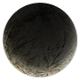
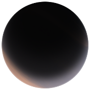
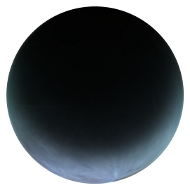
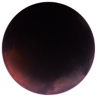
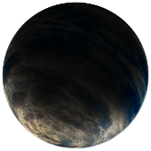
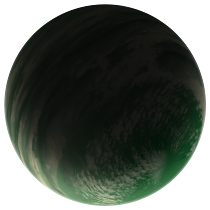
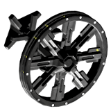
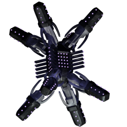
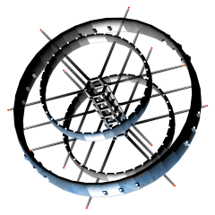

Government: Syndicate
| Food | 264 |
| Clothing | 263 |
| Metal | 289 |
| Plastic | 337 |
| Equipment | 618 |
| Medical | 775 |
| Industrial | 711 |
| Electronics | 742 |
| Heavy Metals | 749 |
| Luxury Goods | 964 |
(8 / 2 uses.
Shipyard:
Basic Ships
Syndicate Basics
Syndicate Advanced
Megaparsec Basics
Megaparsec Advanced
Outfitter:
Common Outfits
Syndicate Advanced
Ammo North

Foundry is home to the Syndicated Shipyards, where more than half of the commercial freighters in human space are manufactured. Although much of the planet is blanketed in smog from the factories, there are also regions of pristine forests and majestic mountains. The Syndicate has a generous vacation policy on Foundry that allows workers to take as much as a month of vacation time every year, and many choose to take that time to escape from the cities and explore the wilderness. The shipyards claim that this vacation time is partly responsible for the high reliability of the ships built here, because a well-rested and relaxed worker is less likely to make the sort of mistakes that can quickly become disastrous in outer space.
The spaceport is surrounded by miles of hangars and factories where new ships are being assembled. The port itself is a trio of towering buildings, with a skywalk on the top floors to provide a view of the surrounding area. Larger ships land on pads on the ground surrounding the towers, while smaller ships can fly into hangars built into the sides of the towers themselves. Everything is made of gleaming metal, and each tower is slightly tapered and adorned with painted fins that make it resemble an enormous starship.
Government: Republic
| Food | 164 |
| Clothing | 313 |
| Metal | 456 |
| Plastic | 448 |
| Equipment | 580 |
| Medical | 565 |
| Industrial | 792 |
| Electronics | 655 |
| Heavy Metals | 891 |
| Luxury Goods | 1072 |
(9 / 1 uses.
Outfitter:
Ammo South
Starcross is a stormy, ocean-dappled planet that was not settled until the planets farther out on this arm of the galaxy grew prosperous enough to create a need for a stop-over point for cargo. Structures must be built strong and on high enough ground to avoid the frequent floods. A few enterprising settlers have taken up farming of some native plants that are edible for humans, including one plant similar to cranberries that has come to be considered a rare delicacy by many.
The spaceport is rudimentary: just a couple of landing pads, each with thick cement walls around it to protect your ship from being buffeted by any storms that strike. The central building is a squat, windowless cement fortress. Inside, however, it is completely different: the ceilings are high, with sun-lamps that provide some sense of warmth and cheer, and native wood paneling or stucco on most of the walls to soften them.
Government: Republic
| Food | 544 |
| Clothing | 349 |
| Metal | 210 |
| Plastic | 440 |
| Equipment | 439 |
| Medical | 608 |
| Industrial | 625 |
| Electronics | 692 |
| Heavy Metals | 1137 |
| Luxury Goods | 1310 |
(5 / 1 uses.
Muspel is a hot world of deserts, canyons, and warm-water oceans. It is mostly a mining and manufacturing planet, and as a result there are few lifelong inhabitants; most of the people here are migrant workers who are just trying to save up enough money to settle down somewhere more hospitable.
Some tourists also come here, to walk through the sandstone canyons where the wind and rain has carved the rock into tall pillars and spires. A few particularly beautiful canyons are protected against strip mining by local law.
The spaceport here is rudimentary: a collection of concrete landing pads clustered around a single large building. The building is designed with layers of color and rounded spires that mimic the canyonlands. From a distance, it would be indistinguishable from the natural rock outcroppings if it were not for the glitter of sunlight off the windows. Inside, people move at a slower and calmer pace than you have seen elsewhere in the Deep.
(23 / 2 uses.
Shipyard:
Lionheart Basics
Outfitter:
Ammo North
Basic Outfits
Deep Sky Basics
Norn is a water world, with low gravity but an atmosphere dense enough to breathe easily. Large mats of seaweed and algae form natural rafts that drift around with the ocean currents, and a few intrepid settlers have colonized them, people who prefer a life of relative solitude and are willing to trust their fates to wherever the winds might take them. Others have settled the few, low islands, which are prone to frequent flooding. Fish are common here, including a few species of flying fish which travel in large packs and are a considerable nuisance for the land-dwellers.
The spaceport is on one of the larger islands, a network of small buildings connected by bridges and raised up on enormous stilts about fifty meters high. Cargo winches are used to load and unload cargo from the boats that dock below. Starships dock in individual hangars, to protect them from the wind. The whole complex sways slightly, almost imperceptibly, as if it were a large boat at sea. The walkways all have tall railings, but you still find yourself afraid to venture too near the edge or to look down at the island and the sea below. The locals, however, walk swiftly and gracefully, with no sign of fear.
Government: Syndicate
| Food | 318 |
| Clothing | 232 |
| Metal | 262 |
| Plastic | 317 |
| Equipment | 573 |
| Medical | 718 |
| Industrial | 655 |
| Electronics | 809 |
| Heavy Metals | 674 |
| Luxury Goods | 1009 |
(10 / 1 uses.

Burthen is only sparsely populated due to crushingly high gravity. The locals - exceptionally strong and short - take a stoic pride in this misery and the many health issues that result. The land in most regions is suitable for farming, but mining of heavy metals is the primary industry, and the source of ready wealth that ties people to this uncomfortable planet.
Some of the excavation vehicles used here are as large and costly as a capital starship and as noisy as a volcano. Vast scars of strip mines span across the landscape. On this planet the environment is something to be endured rather than cherished.
You could feel the oppressive force of this planet's gravity as soon as you landed. The spaceport is a small cluster of single-story buildings. More cargo seems to be handled by robotic vehicles than by actual human operators, but the few people walking past you are all much shorter than you are. You feel like a giant, clearly out of place.
Government: Republic
| Food | 180 |
| Clothing | 218 |
| Metal | 266 |
| Plastic | 343 |
| Equipment | 534 |
| Medical | 801 |
| Industrial | 834 |
| Electronics | 772 |
| Heavy Metals | 989 |
| Luxury Goods | 1274 |
(7 / 1 uses.
Outfitter:
Ammo South
New India was first settled less than a century ago, and the settlers are still struggling to establish themselves. It is a hospitable climate, but the amount of labor needed to clear forests and to plow rocky fields has meant that the towns here can only grow very slowly. The farms grow both food crops and cotton, and very recently they have begun manufacturing their own textiles instead of just shipping the raw cotton off-world for processing.
New India's spaceport is a ring of low wooden buildings around a wide landing area paved with concrete slabs. Around the perimeter carts of trade goods are driven, some being pulled by tractors and others, by horses or oxen. You even think you see a few carts being pulled by water buffalo.
Most of the buildings are for storage, but from somewhere nearby you can smell fresh-baked bread.
Government: Republic
| Food | 191 |
| Clothing | 262 |
| Metal | 237 |
| Plastic | 387 |
| Equipment | 483 |
| Medical | 844 |
| Industrial | 869 |
| Electronics | 790 |
| Heavy Metals | 959 |
| Luxury Goods | 1251 |
(4 / 2 uses.
Sinter is a world where life never developed; the atmosphere is unbreathable, but warm enough and dense enough that people can survive here in pressurized homes or outside when wearing oxygen tanks. The only industry here is mining, which is mostly done with remotely controlled robots, so the population of the entire planet is only a few thousand people.
The spaceport is built next to a large smelter where ore is processed into metal ingots. Even on a planet as inhospitable as this one, the cost of extracting metal from ore is still cheaper than the cost of shipping the ore off-world for processing. A long enclosed terminal building extends out from the smelter, with docking tubes and landing pads every few hundred meters for connecting to visiting ships. Small robotic trolleys carry cargo crates back and forth; only a handful of people are walking around here, and most of them are probably off-worlders.
Government: Pirate
| Food | 197 |
| Clothing | 322 |
| Metal | 249 |
| Plastic | 439 |
| Equipment | 658 |
| Medical | 705 |
| Industrial | 714 |
| Electronics | 699 |
| Heavy Metals | 868 |
| Luxury Goods | 1042 |
(7 / 1 uses.
Outfitter:
Basic Outfits
Ammo North
Ammo South
Pirate Outfits

A cold planet, with dense, foggy atmosphere. As with many pirate outposts, Stormhold is home to an unknown number of villages and hidden outposts, each controlled by a different pirate faction. It is also said that some of the most dangerous fugitives in the galaxy live deep in the forests of this planet, escaping detection by living underground or by avoiding the use of electronic devices.
The spaceport is a large town, with a population of roughly thirty thousand. People of all races and cultures mingle freely, while keeping a wary eye open for off-worlders who may be Republic agents in disguise.
Government: Republic
| Food | 436 |
| Clothing | 227 |
| Metal | 265 |
| Plastic | 479 |
| Equipment | 654 |
| Medical | 514 |
| Industrial | 716 |
| Electronics | 637 |
| Heavy Metals | 955 |
| Luxury Goods | 1426 |
(5 / 1 uses.
Shipyard:
Basic Ships
Betelgeuse Basics
Betelgeuse Advanced
Navy Basics
Megaparsec Basics
Outfitter:
Lovelace Advanced
Common Outfits
Ammo North
Ada is the home planet of Lovelace Labs, one of the most highly respected designers of starship systems and weaponry. Ada was originally settled as a mining planet, and the mines here still produce a steady stream of metal to supply the Labs and the many other industrial companies here.
From above, the planet looks almost lifeless and barren. Most of the major cities on Ada are built into the walls of the canyons, where they are protected from the high winds and occasional dust storms that sweep across the surface.
The spaceport is built into the walls of a canyon which has been blasted out to create trenches that are hundreds of meters wide and deep, a network of flight lanes that are well marked out with lights and beacons. Behind the docking caves is a bustling subterranean city where bare rock and gleaming metal have been woven together in an architecture that is both functional and elegant. The lighting in the caverns varies over the course of the day to match the sunlight outside.
Government: Syndicate
| Food | 573 |
| Clothing | 302 |
| Metal | 237 |
| Plastic | 373 |
| Equipment | 401 |
| Medical | 475 |
| Industrial | 671 |
| Electronics | 726 |
| Heavy Metals | 753 |
| Luxury Goods | 1065 |

(24 / 1 uses.
Outfitter:
Syndicate Basics
Basic Outfits
Ammo North
Furnace is a nearly uninhabited world, used mostly as a waypoint for shipping and as a staging point for the Syndicate fleets that seek to keep this region of space free from pirates. The atmosphere is barely thick enough to be breathable, and none of the plants that grow here are useful for eating. However, because it is only a large moon instead of a full-sized planet, moving cargo and fleets of ships to and from its surface is fairly easy and inexpensive.
Conducting any business here is a nightmare of tedium. Syndicate doctrine claims that corporate structure and process produce a leaner and more effective military force without the perceived wastage of the Republic Navy. But in practice, they seem to have combined all the worst aspects of military and corporate bureaucracy.
The spaceport is mostly a military base. Uniformed crew members hurry back and forth without giving you a second glance. The food in the mess hall is standard military fare, hearty but bland and unappetizing, and there are few shops or other services catering to civilians.
Government: Republic
| Food | 146 |
| Clothing | 294 |
| Metal | 534 |
| Plastic | 360 |
| Equipment | 408 |
| Medical | 806 |
| Industrial | 586 |
| Electronics | 736 |
| Heavy Metals | 1158 |
| Luxury Goods | 1040 |
(7 / 1 uses.
Shipyard:
Basic Ships
Southbound Basics
Outfitter:
Common Outfits
Delta V Basics
Kraz Basics
Ammo South
Glaze is a varied world with everything from sunny beaches to frozen tundra, but it is perhaps best known for its sandstone canyons and deserts. This world's wildlife has never been studied in great detail. Local rumors tell about an alien species of "canyon people" who live in caves in some of the deepest canyons, leading to a constant stream of visiting xenobiologists. The scientific consensus, however, is that these sightings have only been of a reclusive ape-like species that lives in the canyons, and is not known to dig caves or show any other sign of civilization.
The spaceport is a tower of glass and steel perched on top of a mesa, overlooking the canyonlands: spires of red and pale yellow stone, with a sprinkling of trees at the lower elevations. A wide highway winds down the side of the mesa, through several tunnels, and the off to the horizon. The port itself is not terribly busy.
You notice quite a few families with children sitting by the windows on the upper stories of the tower, watching starships landing and taking off. Many of them have brought folding chairs or blankets to sit on. That must be what passes for entertainment on this world.

(2 / 1 uses.
Charon Station provides hyperspace fuel for much of the southern galactic rim. It is a tiny, cramped, and aging station, with twice as many workers here as it was originally designed for. Centuries ago, before much of the Dirt Belt was settled, this was the first spot below Algorel where merchant caravan fleets from the Deep could stop over on their way to the worlds farther up the Rim.
The close quarters have fostered an extreme scrupulosity about personal space. It is unnerving to walk down a densely crowded hallway and fail to make eye contact with anyone.
The refinery here operates in shifts, non-stop, so there are always people coming and going in the hallways and docking bays. The cafeteria is so crowded that many workers are just standing up against the walls eating off their trays instead of trying to find a place to sit. Every few minutes, light flashes in through one of the windows from welders outside in space suits trying to keep the aging hull in perfect shape. Others drift around outside checking up on the solar panels and replacing burnt-out modules.
Government: Pirate
| Food | 538 |
| Clothing | 357 |
| Metal | 293 |
| Plastic | 423 |
| Equipment | 386 |
| Medical | 607 |
| Industrial | 606 |
| Electronics | 660 |
| Heavy Metals | 798 |
| Luxury Goods | 1078 |
(10 / 1 uses.
Shipyard:
Southern Pirates
Northern Pirates
Outfitter:
Syndicate Basics
Common Outfits
Ammo North
Ammo South
Pirate Outfits
Pirates who have struck it rich dream of retiring on Buccaneer Bay. It is a warm ocean planet, with many places reminiscent of the islands in the ancient Caribbean where humanity's first pirate fleets sailed.
Many of the inhabitants are in fact not pirates, but their descendants, and these children and grand-children of anarchist outlaws have built a system of regional government that oversees hospitals, schools, and other public services, all created without funding from the Republic or taxes paid to it. The planet even sports its own shipyard, although many of the ships built here are, not surprisingly, based on designs pirated from the Syndicate and Republic shipyards.
This is the sort of spaceport you picture in your head when you think of pirates. Half the storefronts are bars, and rum seems to be on the menu everywhere. It is almost like the stories of ancient Earth, except that the eye patches are cybernetic implants and the peg legs are motorized prosthetics. Swarthy, dangerous-looking women glance at you as you pass by, and scantily clad men crowd around the bars, which is what you seem to remember the stories said it was like on Earth, too, although there it may have been the other way around.
Government: Republic
| Food | 485 |
| Clothing | 332 |
| Metal | 251 |
| Plastic | 476 |
| Equipment | 616 |
| Medical | 621 |
| Industrial | 607 |
| Electronics | 714 |
| Heavy Metals | 1071 |
| Luxury Goods | 1392 |
(22 / 1 uses.
Watcher is a small moon, the only world in this system that sustains any indigenous life. Because of the low gravity, humans have not yet built a permanent settlement here, but it is occasionally visited by biologists interested in studying low-gravity life forms. There are forests here where the trees grow over two hundred meters tall.
YOU CANNOT REFUEL HERE.
Government: Syndicate
| Food | 254 |
| Clothing | 219 |
| Metal | 322 |
| Plastic | 309 |
| Equipment | 643 |
| Medical | 560 |
| Industrial | 870 |
| Electronics | 672 |
| Heavy Metals | 688 |
| Luxury Goods | 1162 |
(6 / 1 uses.
Quicksilver is a world of highly variable, violent weather: hurricanes, hail, and earth-shaking thunderstorms. Under the planet's crust, it is equally turbulent and unpredictable, leading to frequent earthquakes and volcanic activity.
Although Quicksilver has vast mineral resources, the tectonic activity makes underground mining far too dangerous. However, a few enterprising settlers work in surface mining and mountaintop removal. The result are ugly, but this is a far too inhospitable world for anyone to care what it looks like.
The spaceport is a single, enormous hangar built as a geodesic dome. It is filled with the constant dull roar of rain beating against the dome from above. When an especially strong blast of wind strikes the dome, its joints flex slightly and you can see the whole structure ripple and move.
Amenities here are minimal: a small cafeteria selling hot drinks and warm stew, and a marketplace mostly filled with stacks of refined steel and aluminum and titanium for sale. A smaller stack of lead-lined crates hold radioactive metals. The air is not particularly cold here, but it is very damp, and the howling weather outside seems to weigh on everyone's spirits.
Government: Republic
| Food | 336 |
| Clothing | 256 |
| Metal | 490 |
| Plastic | 427 |
| Equipment | 490 |
| Medical | 758 |
| Industrial | 606 |
| Electronics | 821 |
| Heavy Metals | 799 |
| Luxury Goods | 1094 |

(11 / 1 uses.
Outfitter:
Ammo South
Basic Outfits
New Wales is home to a few mining outposts which extract and refine rare earth minerals and heavy metals. It is dangerous work: the mines are deep underground and prone to noxious gases and cave-ins, and the refineries work with molten radioactive materials and caustic chemicals. Due to the somewhat dim light of the star Algorel, and the cloudiness of the atmosphere, this is not a good world for farming, and the population remains quite small.
The warehouses at the spaceport are kept under continuous guard due to the high value of the refined metals they contain. There are several missile silos and laser turrets as well; New Wales has survived several pirate attacks in the last decade. Within the spaceport cafeteria, however, the locals are quite friendly and excited to connect with visitors and hear news of the outside world. The cafeteria is cooking lamb stew, and the smell of it pervades the whole building.
(3 / 1 uses.
This station is so run down that most of the workers carry oxygen masks in case a meteorite punctures the hull, and a few of them are even dressed in full space suits. The deuterium refinery here is barely operating, the number of workers is minimal, and nearly half of them seem to be busy just welding patches onto the hull to hold the station together. At the moment there are no repair or refueling services available here.
YOU CANNOT REFUEL HERE.
Government: Republic
| Food | 509 |
| Clothing | 181 |
| Metal | 388 |
| Plastic | 477 |
| Equipment | 697 |
| Medical | 531 |
| Industrial | 618 |
| Electronics | 663 |
| Heavy Metals | 1066 |
| Luxury Goods | 1422 |
(9 / 1 uses.
Shipyard:
Luxury Ships
Outfitter:
Common Outfits
Lovelace Basics
Lovelace Advanced
Shroud is a world of castles in the clouds and slums in the valleys below. High on the mountain peaks, above the clouds, the planet's few elites live in splendid mansions. Below them, the people work mostly in textiles: farming cotton, raising sheep, working at looms and sewing machines in dimly lit factories.
The level of intrigue and dalliance between the bored gentry could easily compete with the most lurid and unrealistic of Victorian fiction.
The spaceport here is a shopping mall. You landed on a plain cement slab near the "cargo entrance," where raw goods are bought and sold. But the other end of the building holds hangars for luxury ships and glass-windowed storefronts where mannequins are dressed in outlandish and horribly impractical outfits. There is a sparse cafeteria for dock workers near your entrance, and fancy steakhouses and seafood places for the more wealthy visitors.
(3 / 1 uses.
Triton Station serves both as a refinery for hyperspace fuel, and as a garrison for ships of the Republic Navy. Patrol ships are constantly landing here and then taking off to scour the surrounding systems for pirates. Since pirates are scarce in this part of space, it seems like a very tedious job.
The mess hall is empty except for one table where some Navy officers are playing a card game. They are sitting right under a ventilation duct, and the cards keep blowing off the table; the station's low simulated gravity is not enough to hold them there.
Government: Republic
| Food | 455 |
| Clothing | 315 |
| Metal | 313 |
| Plastic | 415 |
| Equipment | 654 |
| Medical | 567 |
| Industrial | 792 |
| Electronics | 788 |
| Heavy Metals | 1071 |
| Luxury Goods | 1427 |

(4 / 2 uses.
Shipyard:
Basic Ships
Betelgeuse Basics
Outfitter:
Basic Outfits
Lovelace Basics
Ammo North
Mainsail is a water world: although there are some settlements on dry land, the largest cities are floating, artificial islands, which travel between hemispheres over the course of the year pursuing the most ideal weather. Other, smaller islands are privately owned by single families or corporations. Mainsail is a prohibitively expensive place to live.
Centuries ago Mainsail was home to pirates of the old-fashioned variety, fleets of motor boats or even old-fashioned sailing vessels that would launch raids against the city-ships.
The spaceport is on its own city-ship floating some distance away from the others, so that the locals need not deal with the noise and uncouth manners of spacefarers. Surrounding the port is a ring of docks where barges are moored; on platforms farther "inland," starships land. Few goods are produced here; most of the people rich enough to live on Mainsail are connected with interplanetary corporations whose physical business takes place elsewhere.
Government: Republic
| Food | 143 |
| Clothing | 293 |
| Metal | 537 |
| Plastic | 458 |
| Equipment | 446 |
| Medical | 791 |
| Industrial | 618 |
| Electronics | 795 |
| Heavy Metals | 1075 |
| Luxury Goods | 1126 |
(8 / 1 uses.
New Tibet is a world of jagged mountains and deeply shadowed valleys. Although it has been inhabited for centuries, in many places the terrain is so rugged that roads cannot be built, leaving several of the smaller towns almost completely isolated. Taking advantage of this isolation, several orders of Buddhist monks have built monasteries here.
In the lowlands, large farms support sprawling cities full of factories, a striking contrast to the simplicity and isolation of the mountain villages.
The spaceport is in a hill region, just outside the largest city, with a view of a valley full of farms that stretch for miles and miles down to the ocean. The port is much less modern than the city nearby; it was built by the early settlers and has not been significantly updated since then, because the focus has been on improving life for the locals, not for their occasional visitors.
Government: Republic
| Food | 154 |
| Clothing | 329 |
| Metal | 535 |
| Plastic | 305 |
| Equipment | 632 |
| Medical | 624 |
| Industrial | 833 |
| Electronics | 720 |
| Heavy Metals | 1023 |
| Luxury Goods | 1114 |
(10 / 1 uses.
Outfitter:
Basic Outfits
Kraz Basics
When the first colonists landed, they thought that they had found a dream world on Thunder: perfect gravity, perfect temperature, perfect atmosphere. Unfortunately, they soon discovered that the planet has unusually high tectonic activity, enough that building anything higher than two stories is almost impossible. Because of the earthquakes, attracting settlers has always been difficult for Thunder, and right now the population is only a few million.
The spaceport's landing pads are all solid slabs of metal; poured concrete would be far too prone to cracking. The spaceport village itself is a sprawling collection of squat, sturdy buildings, and a sign near the entrance to the cargo warehouse reads, "Do not stack crates."
Government: Pirate
| Food | 226 |
| Clothing | 253 |
| Metal | 523 |
| Plastic | 308 |
| Equipment | 511 |
| Medical | 814 |
| Industrial | 754 |
| Electronics | 841 |
| Heavy Metals | 1142 |
| Luxury Goods | 1073 |
(9 / 2 uses.
Shipyard:
Basic Ships
Northern Pirates
Betelgeuse Basics
Outfitter:
Ammo North
Ammo South
Basic Outfits
Freedom is home to the oldest and largest anarchist colonies in human history. The original settlers arrived in the first century after the discovery of spaceflight, coming with the goal of simply getting as far away from civilization as possible. The colony has reinvented itself countless times since then as different leaders have taken control, and in fact at present it is split into two separate towns, East Mesa and West Mesa.
The environment is a mix of deserts and brackish oceans, with a fair amount of native wildlife and good potential for farming. Anywhere else in human space, this planet would have become densely settled, but out here it has remained mostly empty.
Apparently anarchists are not opposed to commerce as long as no one is regulating it. Half of the landing pads in the spaceport are available for ships; the other half have been taken over by farmers busy selling their produce, or merchants buying from incoming ships and piling crates into large trucks.
A sign above the entrance to the spaceport bar reads, "Fine home-brewed whiskey! Get smashed without getting taxed!" Further down the street, a sign over what appears to be a real estate office reads, "Why not settle where The Man can't reach you?"
Inexplicably, the only advertising on the seafood restaurant across the street is an enormous banner proclaiming, "We have brown rice."
Government: Pirate
| Food | 298 |
| Clothing | 364 |
| Metal | 338 |
| Plastic | 266 |
| Equipment | 601 |
| Medical | 746 |
| Industrial | 754 |
| Electronics | 664 |
| Heavy Metals | 889 |
| Luxury Goods | 962 |
(6 / 1 uses.
Outfitter:
Ammo North
Ammo South
Pirate Outfits
Deadman's Cove is an ocean planet; the continents take up only a tenth of its surface area. Legends tell of massive sea creatures hiding in the deeps: serpents hundreds of meters long; colossal sea turtles; strange tentacled monsters and exotic fish.
One island archipelago is home to the spaceport, the only part of the planet where it is safe to land uninvited. The other islands - even some that seem from a distance to be uninhabited - are often used as staging bases for pirate fleets, who guard their secrets closely.
Your ship is on a landing pad only a few meters above the pounding surf, and you can't help worrying about what might happen if the tide rises any higher. If nothing else, the salt water is bound to corrode your hull if you stay here too long. You make your way to a bar where a cage hanging from the ceiling holds an actual parrot. After trying for a while to get it to talk to you, you realize that it is dead, stuffed and nailed to its perch.
Government: Syndicate
| Food | 529 |
| Clothing | 294 |
| Metal | 241 |
| Plastic | 467 |
| Equipment | 381 |
| Medical | 494 |
| Industrial | 718 |
| Electronics | 711 |
| Heavy Metals | 866 |
| Luxury Goods | 1033 |

(14 / 1 uses.
Outfitter:
Ammo North
Hippocrates is a sparsely settled world, home mostly to scientific research outposts. The environment here, orbiting so close to a red dwarf star, is very different from most other settled planets. The scientists estimate this star system to be over ten billion years old, enough that life here has had much more time to develop and evolve than on any planet orbiting a brighter, more short-lived star.
The spaceport is a single building, and half the landing pads are just packed dirt. This port was not designed for large volumes of cargo or of visitors. Within the building is a sun-lit atrium, with separate storefronts for the commodity exchange, the job center, and the bank. The only place you can see where you might be able to get something to eat is a bar, advertised by a sign showing an Erlenmeyer flask with a folding paper umbrella hung over the rim.
Government: Pirate
| Food | 154 |
| Clothing | 264 |
| Metal | 520 |
| Plastic | 334 |
| Equipment | 537 |
| Medical | 880 |
| Industrial | 739 |
| Electronics | 707 |
| Heavy Metals | 1231 |
| Luxury Goods | 946 |
(7 / 1 uses.
Outfitter:
Ammo North
Zenith is a cold and unpleasant world, where the fog seldom lifts and the sun is rarely seen, where much of the lowlands are flooded each day by the tide, and storms are unpredictable and fierce. It has, however, one major advantage as a place to settle: it is far enough away that the Republic makes no attempt to control it.
Several villages have been founded near the equator, and in addition there are an unknown number of private holdings, ranging from underground bunkers to enormous cement fortresses. Because the land is owned by no government and anyone can build a dwelling without permission or paperwork as long as they are willing to fight off any other claimants, the total population of Zenith is unknown.
To create a spaceport for Zenith, one enterprising privateer a few centuries ago used a mixture of explosives and heavy machinery to shift the top of one of the tallest mountains down into the neighboring valleys, creating a high plateau that is (usually) above the fog line. There are landing pads both for starships like yours and for airships that carry cargo to and from the settlements elsewhere on the planet. The port is nearly deserted, however; it is clear that they do not do much business here.
Government: Republic
| Food | 445 |
| Clothing | 314 |
| Metal | 318 |
| Plastic | 452 |
| Equipment | 595 |
| Medical | 809 |
| Industrial | 656 |
| Electronics | 805 |
| Heavy Metals | 1186 |
| Luxury Goods | 1188 |
(10 / 1 uses.
Outfitter:
Common Outfits
Lovelace Basics
Ammo North
Farpoint, on the northernmost end of human space, is a rocky desert planet home to a Republic Navy base and not much else. Farming is possible only within greenhouses, and this system is too far from the galactic center to be desirable for trade or industry.
The spaceport is the Navy base; there are no other settlements. There are a few pubs filled mostly with off-duty officers, and a quartermaster's warehouse where you can trade goods. The most striking aspect of the base, however, is how empty it is. There are enough buildings here to make it feel like a small city, but only one small corner of the port is in use; the rest of the buildings are boarded up. And there are enough landing pads and hangars to house perhaps a fifth of the entire fleet, but they are nearly all empty at the moment.
The massive scale of the fortifications, coupled with their state of near-total disuse, puts you in mind of the fabled Maginot Line on Earth - a relic of an anticipated battle that failed to materialize according to plan.
Government: Republic
| Food | 170 |
| Clothing | 314 |
| Metal | 467 |
| Plastic | 372 |
| Equipment | 413 |
| Medical | 880 |
| Industrial | 662 |
| Electronics | 768 |
| Heavy Metals | 1042 |
| Luxury Goods | 1057 |
(22 / 1 uses.
Outfitter:
Ammo South
The only settlement on this small world is Twinstar Depot, a village created mostly just to service the spaceport, where food and equipment from the southern galactic arm is stored and sent out in all directions to supply the rest of human space. The gravity is far less than ideal for human development, but the atmosphere is breathable and some tourists come to the planet just for the experience of being able to run and jump in low gravity without the need for a suit or oxygen tanks.
The depot consists mostly of large storage racks, with automatic lifts constantly clanking up and down. Very few people are in sight, aside from a small cafe near the center of the port. It is not a hospitable place.
Government: Republic
| Food | 550 |
| Clothing | 262 |
| Metal | 393 |
| Plastic | 253 |
| Equipment | 523 |
| Medical | 498 |
| Industrial | 667 |
| Electronics | 695 |
| Heavy Metals | 874 |
| Luxury Goods | 1094 |
(8 / 2 uses.
Shipyard:
Basic Ships
Betelgeuse Basics
Betelgeuse Advanced
Outfitter:
Common Outfits
Ammo North
Lovelace Basics
Syndicate Basics
Chiron is the only planet outside the solar system that was colonized by humanity prior to the discovery of the hyperdrive. It is now the second most populous planet in the Republic, with many sprawling cities and a burgeoning pollution problem.
Although Earth still has the most prestigious universities in the galaxy, Chiron has become the de-facto leader of the higher education industry, catering to those who value excellent teaching more highly than an illustrious name. As a result, offworld students form a noticeable fraction of the population.
There are two spaceports on Chiron. The Old Port was built back when it was first settled, and was placed in a desert region, far from where people would want to live, so that they would not be as affected by the fallout from the nuclear propulsion that was used in the first, pre-hyperspace starships.
The New Port, on the other hand, is in the center of New Sidney, one of Chiron's largest cities. Its soaring architecture and gleaming mirrored glass is intended to make a clear statement, that Chiron is everything Earth is not: clean, modern, prosperous.
Government: Syndicate
| Food | 236 |
| Clothing | 352 |
| Metal | 324 |
| Plastic | 390 |
| Equipment | 555 |
| Medical | 531 |
| Industrial | 859 |
| Electronics | 721 |
| Heavy Metals | 714 |
| Luxury Goods | 1132 |
(10 / 1 uses.
Outfitter:
Basic Outfits
Syndicate Basics
Ammo North

Nimbus is a stormy ocean world, where a rain shower can descend on you almost without warning, only to be replaced with equal suddenness by bright sunshine. It draws mostly the sort of people who can weather such changes with placid, unperturbed calm; tourist guidebooks often rank Nimbus near the top in their lists of "friendliest natives."
All the industry on Nimbus is driven by the sea. Fish are plentiful, and the oceans here also contain some unique microorganisms that are harvested to extract useful medical compounds.
The spaceport is on a small island, but well above the high water mark. The mixture of ocean spray and fog and drizzling rain is enough to turn your clothes damp even just on the short walk from your landing pad to the main cluster of buildings. Thankfully, the weather is warm, but you are glad to find a cozy, dry, and welcoming space in the coffeehouse across from the warehouse district.
Government: Republic
| Food | 565 |
| Clothing | 326 |
| Metal | 284 |
| Plastic | 496 |
| Equipment | 682 |
| Medical | 665 |
| Industrial | 629 |
| Electronics | 673 |
| Heavy Metals | 1048 |
| Luxury Goods | 1461 |
(9 / 2 uses.
Shipyard:
Betelgeuse Basics
Betelgeuse Advanced
Lionheart Basics
Outfitter:
Common Outfits
Deep Sky Basics
Ammo North
Follower is on the edge of the "paradise planets" region of space; not really one of them yet, but aspiring to be. It is prosperous, but from manufacturing rather than law or finance or venture capitalism. A significant fraction of the local taxes collected here are being spent on terraforming, raising global temperatures and reducing seasonal fluctuations. The goods produced here always have a ready market to purchase them, so Follower's job economy in considered very stable.
As one of the few planets still actively engaged in terraforming, Follower has been the location of several experiments with new technology, trying to leapfrog the centuries-slow process that other worlds have gone through. Unfortunately most of these experiments have failed, sometimes spectacularly.
The spaceport is a single skyscraper, fifty floors tall and as wide as it is high, with the floors twisting around each other in a helical patterns so that on each level, the landing bays are approached from a slightly different angle. The whole structure is built of steel and gleaming glass. Inside, the soaring ceilings give you more of a sense of opulence than of comfort.
Government: Republic
| Food | 171 |
| Clothing | 343 |
| Metal | 543 |
| Plastic | 498 |
| Equipment | 399 |
| Medical | 816 |
| Industrial | 581 |
| Electronics | 799 |
| Heavy Metals | 1092 |
| Luxury Goods | 1093 |

(8 / 1 uses.
Outfitter:
Basic Outfits
Ammo South
Delta V Basics
Like its namesake on ancient Earth, New Holland is a world of oceans and low country. It is an old planet, its tectonic activity long since silenced, worn smooth by eons of weather. For those who live here, flooding is a constant threat, requiring a vast network of dikes and levees. But the floods also refresh the soil, making this one of the most fertile farming worlds in the region.
As the population has boomed, and as the farms have been consolidated and become more mechanized, large cities have grown to house factories and workers.
The spaceport is on the fringes of one of the factory towns. In the distance are row after row of identical brick buildings; in the opposite direction, a safe distance from the city, are the cooling towers of several nuclear power plants. The port itself is laid out for maximum efficiency in loading and unloading cargo regardless of the weather or time of day: a row of hangars, open at one side to ships coming in and departing, and on the other to a road carrying a steady stream of trucks.
Government: Syndicate
| Food | 240 |
| Clothing | 205 |
| Metal | 340 |
| Plastic | 293 |
| Equipment | 567 |
| Medical | 713 |
| Industrial | 759 |
| Electronics | 751 |
| Heavy Metals | 694 |
| Luxury Goods | 1072 |
(5 / 2 uses.
Outfitter:
Common Outfits
Syndicate Basics

Moonshake is a planet of overpopulated cities side by side with dense wilderness. A few centuries ago it became a local center of industrial production when the Syndicate began building factories here. Since then, immigrants looking for steady work have been pouring in, doubling the planet's population every few decades. It is now a regional center for the production of everything from textiles to molded plastic parts to reactor-grade plutonium.
It is characteristic of the Syndicate that the wilderness is entirely ignored, both scientifically and agriculturally, until it is plowed under to make way for expanding industry. Nowhere else in the galaxy is the local fauna so plentiful and yet so poorly characterized.
The smog is so thick here that you could barely see the landing pad until you were only half a kilometer above it. At street level, the smog is less evident, but the air leaves a faint metallic taste in your mouth. The spaceport, like the rest of this city, is overcrowded, with people walking along the narrow streets and trying to thread their way in between large cargo trucks loaded with crates. You see signs for restaurants of every variety imaginable, but most of them look dirty and dimly lit.
Government: Republic
| Food | 472 |
| Clothing | 378 |
| Metal | 335 |
| Plastic | 274 |
| Equipment | 500 |
| Medical | 534 |
| Industrial | 605 |
| Electronics | 806 |
| Heavy Metals | 781 |
| Luxury Goods | 1048 |
(12 / 1 uses.
Shiver is a dead and frozen world. The only settlement is a small refueling station that services cargo fleets on their way to Earth. Precipitation is rare here, but sometimes the wind whips up snow and ice from the surface into something akin to a desert sandstorm, and even on days when the wind dies down the air sparkles with tiny, floating ice crystals. Most people who come here for work only stay for a few months or half a year, just long enough for the sense of adventure to die away.
The spaceport is protected from the wind and blowing snow by a perimeter wall about fifty meters tall. Aside from running the fueling station, one of the few jobs for the workers here is to operate the bulldozers that push away the snowdrifts and keep the station from being buried beneath them. Although the air is breathable, ships that land here connect directly to docking tubes, to protect their crews from the icy air.
There are no children here, and almost no women. Most of the workers are men in their early twenties. No one makes an effort to greet you.
Government: Republic
| Food | 385 |
| Clothing | 227 |
| Metal | 392 |
| Plastic | 289 |
| Equipment | 454 |
| Medical | 703 |
| Industrial | 788 |
| Electronics | 683 |
| Heavy Metals | 986 |
| Luxury Goods | 1046 |
(4 / 1 uses.
Shipyard:
Basic Ships
Lionheart Basics
Lionheart Advanced
Outfitter:
Common Outfits
Ammo North
Deep Sky Advanced
Midgard is a world with as much geographic diversity as Earth itself: mountains, tundra, desert, oceans, marshes, plains. It was the second world in the Deep to be settled, seven centuries ago. It is now home to dozens of major metropolitan areas and a population of over four billion. Although a select few live outside the cities and work in farming or ranching, the vast majority of people here have jobs in manufacturing.
Food, fashion, and entertainment here all strike you as out of pace with broader galactic culture. The deep independent history of the planet makes it less likely to simply follow the latest Earth trends as the more recent colonies do.
The spaceport is located in the center of the city of New Reykjavik, a bustling metropolis which is also Midgard's center of government. The port was built five hundred years ago, and its architecture is much more conservative than other ports in the Deep: instead of domes and rounded, wavy surfaces, it is a collection of tall, square granite towers, connected by bridges at various levels. Most of the hotels and restaurants are in a central tower, slightly higher than the others. There is no central marketplace; instead, you can just buy or sell cargo from a computer terminal and a robotic forklift will arrive at your docking bay to carry it.
Government: Syndicate
| Food | 359 |
| Clothing | 296 |
| Metal | 278 |
| Plastic | 353 |
| Equipment | 467 |
| Medical | 596 |
| Industrial | 783 |
| Electronics | 671 |
| Heavy Metals | 650 |
| Luxury Goods | 1176 |
(8 / 1 uses.
Lodestone is a young, volcanically active world. The atmosphere is often filled with choking dust or sulfur dioxide, and new eruptions can occur with hardly any warning. Building any sort of structure here is an exercise in futility.
The only reason Lodestone is inhabited is because of the planet's unusually rich reserves of heavy metals and other rare minerals.
This port is known as "Fourth Port." The previous three ports are partly or completely buried under lava flows. The present port is built on a raised platform a hundred meters above the ground. The steel stilts supporting the platform are intended to keep the port from being buried by any encroaching lava flow. However, given that some explosive eruptions here have been known to launch lava nearly a kilometer into the air, sooner or later Fourth Port will need to be replaced by a fifth.
Government: Pirate
| Food | 190 |
| Clothing | 242 |
| Metal | 473 |
| Plastic | 403 |
| Equipment | 432 |
| Medical | 896 |
| Industrial | 622 |
| Electronics | 804 |
| Heavy Metals | 1034 |
| Luxury Goods | 1058 |
(6 / 1 uses.
Outfitter:
Basic Outfits
Ammo North
Ammo South
Pirate Outfits
Bloodsea is nearly uninhabited, except for a few pirate outposts. Its name comes from the planet's oceans, which are blood-red due to rhodophyte algae. Although the climate is temperate and there are many white sand beaches, no one comes here hoping to go swimming.
The pirates have no industry of their own, but instead make a living by reselling stolen cargo from raids on merchant fleets.
When you landed your ship near one of the larger outposts, no one even came out to greet you or to check your paperwork - not that anyone on a pirate world would care about such things. In the center of town is an open-air marketplace where large men armed with large guns stand guard over piles of crates, while others examine the wares that are for sale and haggle over prices.
The local slang incorporates threats of extreme violence as a seemingly meaningless verbal tic. "Hey, I'm gonna cut off your fingers one by one until you buy a meat patty!" a vender calls out cheerfully as you pass. "First one's free, and I'll tie a knot in your spine if you don't like it."
Government: Republic
| Food | 289 |
| Clothing | 202 |
| Metal | 416 |
| Plastic | 461 |
| Equipment | 562 |
| Medical | 684 |
| Industrial | 773 |
| Electronics | 833 |
| Heavy Metals | 918 |
| Luxury Goods | 1231 |
(10 / 1 uses.
New Greenland was first settled about six hundred years ago, at the peak of the "Turf Wars" era where most planets were controlled by powerful corporations and their struggles often turned into outright warfare with privately owned fleets and armies. The people who came to New Greenland were looking for a world so marginal and undesirable that they could live here in peace without being caught in the crossfire. The locals here grow food in greenhouses and specialize in making warm winter clothing, which is this planet's only export.
The spaceport is near the equator, but it is still cold enough that there is always some snow on the ground. In addition to the outdoor landing pads a few hangars are available: an effort by the locals to make their world a little more appealing to merchants passing through the system. You have never seen as many people in fur coats as there are here; what might be considered a luxury in other parts of the galaxy is a necessity here, where the cheapest clothing material is the pelts of indigenous animals.
From the size of the claws hanging decoratively off some of the coats, you have to give a grudging respect to the hunters. High fashion is not an industry that usually involves risk of dismemberment.
Government: Pirate
| Food | 135 |
| Clothing | 365 |
| Metal | 566 |
| Plastic | 358 |
| Equipment | 583 |
| Medical | 890 |
| Industrial | 636 |
| Electronics | 800 |
| Heavy Metals | 1210 |
| Luxury Goods | 1012 |
(7 / 1 uses.
Shipyard:
Northern Pirates
Outfitter:
Basic Outfits
Ammo North
Ammo South
Pirate Outfits
Haven was founded by a highly successful "privateers" nearly two centuries ago. Since then, as rival bands of pirates have fought over it, it has changed hands fourteen times, but has never been successfully invaded by the Republic. Numerous small manufacturing shops sell outfits that cannot be bought legally, and there is even a small shipyard where customized ships are sold.
Much of the planet is desert, but with enough moisture to grow enough crops to feed the entire population. Strip mining has turned other parts of the planet into barren wastelands, and has polluted many of the rivers.
The spaceport is old and dingy, with piles of litter in the gutters and graffiti on many of the alley walls. Many of the shops are closed, the windows boarded over or covered with yellowing paper. This is an independent world, and a relatively stable settlement, but the effects of its separation from the rest of the galaxy are evident. A few young people carrying large backpacks eye you with interest, perhaps trying to gauge their chances of getting you to give them a cheap lift off-planet.
Government: Republic
| Food | 467 |
| Clothing | 337 |
| Metal | 450 |
| Plastic | 295 |
| Equipment | 636 |
| Medical | 827 |
| Industrial | 826 |
| Electronics | 750 |
| Heavy Metals | 863 |
| Luxury Goods | 1363 |
(7 / 1 uses.

Arabia is an uncomfortably hot and humid world of deserts, savanna, and a few small and scattered rainforests. Large herds of bison-like animals roam the plains, providing the locals with a steady source of food. Occasional stampedes, involving tens of thousands of these animals, have been known to level entire towns here.
Aside from hunting, most of the industry takes the form of harvesting and refining petrochemicals to make plastics, polymers, and oils. In some parts of Arabia, the pumpjacks outnumber the people a hundred to one.
The spaceport consists mostly of a wide, open field paved in asphalt, the cheapest material available here. The pavement shimmers with heat, and is pockmarked with divots where ships' landing gear has sunk several centimeters in to the surface.
At the center of the pavement is a small cluster of refrigerated sheds and stacks of crates carrying various goods for trade; a few armed guards patrol around them to prevent theft. A food truck is parked nearby, serving burgers and tacos to the port workers and to the crews of the few starships that are parked here at the moment.
Government: Republic
| Food | 159 |
| Clothing | 347 |
| Metal | 565 |
| Plastic | 291 |
| Equipment | 476 |
| Medical | 881 |
| Industrial | 580 |
| Electronics | 749 |
| Heavy Metals | 968 |
| Luxury Goods | 1059 |

(7 / 1 uses.
Outfitter:
Ammo South
Lichen is a rainy world of marshes, fields, and streams. More than half the rice consumed in this administrative district is grown on Lichen, because of its near-optimal climate. However, because of the constant rain and overcast weather, few people aside from farmers have settled here.
Planetary government, or indeed any government above the village level, is virtually nonexistent. Most farms are small and family-owned, negotiating sales directly with offworld corporations who then arrange for transportation of the produce.
The spaceport is built on a small mountain, one of the rare places where enough bedrock rises above the soil to provide a firm foundation for large buildings and a flood-free location. The warehouses and market are built of concrete, but the smaller buildings on the outskirts of the port are wood framed. Moss is growing everywhere, and in places the wood is stippled with mold. But the people are friendly enough, unhurried and peaceful.
A noodle soup restaurant near the center of the port town seems to be the gathering place of choice. Whatever they're cooking inside, it smells delicious.
Government: Republic
| Food | 440 |
| Clothing | 319 |
| Metal | 331 |
| Plastic | 299 |
| Equipment | 426 |
| Medical | 741 |
| Industrial | 802 |
| Electronics | 657 |
| Heavy Metals | 866 |
| Luxury Goods | 1182 |
(30 / 1 uses.
Outfitter:
Ammo North
Mani is a small moon, with an atmosphere thick enough to keep your blood from boiling off but too thin to breathe without assistance. It is used only as a cargo depot and a spot for refueling and repairs. The native plant life mostly consists of pale-colored lichens and a few species of grass. The only animals are insects.
The spaceport is shaped like a wheel with no rim: a series of spokes jutting out from a central hub, where each spoke is a docking tunnel that can connect to any ship that lands beside it. Inside are about a dozen people and a couple hundred robots. The people and robots alike seem uninterested in any interactions with you. It is a strange sort of aloofness that you have heard is common to all the worlds in the Deep.
(3 / 2 uses.
Fenrir Station is a bustling refinery, and from the way the foremen looked at you when you stepped off your ship, they seem to be eager for new recruits. In addition to harvesting deuterium, this is one of the few refinery stations in human space which also collects helium-3, an isotope with some exotic uses in medical imaging and in energy research.
The diversity of isotopes found here is partly due to the station being a relatively new construction and benefitting from modern technology. But the gas giant which the station harvests from also has a composition unlike any other known planet. One theory is that it is on the cusp of becoming a brown dwarf star, in which case the isotopes now being stirred into the upper atmosphere by convection will eventually be depleted by fusion.
This station is composed of two rings, one containing the refinery and the other, the living quarters and cafeteria for the workers, in addition to a docking bay for visiting freighters. The workers all seem to be very busy, and few of them pay any attention to you.
Government: Syndicate
| Food | 167 |
| Clothing | 369 |
| Metal | 422 |
| Plastic | 274 |
| Equipment | 661 |
| Medical | 846 |
| Industrial | 845 |
| Electronics | 707 |
| Heavy Metals | 981 |
| Luxury Goods | 968 |
(5 / 1 uses.
The sunlight that filters through Bluestone's atmosphere is too dim and reddish for ordinary Earth plants to thrive. The native plants, mostly grasses and lichens, have adapted their own unique chlorophyll-like molecules in response.
Bluestone is sparsely populated. Aside from one small research village dedicated to cultivating edible hybrid crops that can grow on similar worlds, most of the industry here is focused on drilling and refining oil to make a variety of plastics.
Aside from the metal roofs on a few of the largest warehouses, the spaceport buildings are constructed largely of durable plastic resin, pre-cast into interlocking beams and panels. There is a small pub in the center of the port, with its exterior walls painted a cheerful yellow. All the other buildings are the same red-brown color of the raw plastic.
Government: Republic
| Food | 482 |
| Clothing | 226 |
| Metal | 384 |
| Plastic | 470 |
| Equipment | 681 |
| Medical | 568 |
| Industrial | 635 |
| Electronics | 647 |
| Heavy Metals | 1140 |
| Luxury Goods | 1344 |
(5 / 2 uses.
Shipyard:
Betelgeuse Basics
Betelgeuse Advanced
Navy Basics
Megaparsec Basics
Outfitter:
Common Outfits
Ammo North
Lovelace Basics
Prime is a very Earthlike ocean world, with a population of over a billion people. It is home to Betelgeuse Shipyards, and much of the industry on the planet is related to ship-building in one way or another, like refining and working metal, or developing exotic new hull and framing materials. Although some mining is done in more remote regions of the planet, Prime is reliant on shipments of metal and other goods to feed its industries.
The spaceport is a long, multi-story building designed to look like a carrier starship, but much larger. It is built mostly of steel and glass, with the sturdy beams and girders that support the building visible on the inside, giving it the look of a ship still in construction, whose interior has not yet been fully fitted out. In nearby hangars, final assembly is being done on ships, some of which have been completed and are now for sale.
Government: Republic
| Food | 453 |
| Clothing | 237 |
| Metal | 323 |
| Plastic | 485 |
| Equipment | 688 |
| Medical | 512 |
| Industrial | 616 |
| Electronics | 738 |
| Heavy Metals | 968 |
| Luxury Goods | 1369 |
(23 / 1 uses.
Splashdown is an aging world where plate tectonics have long since died down and the weather has worn the surface down into lowlands, marshes, and shallow seas. Most of the land area is not suitable for growing anything but rice, and only a few settlements have been built here. Most visitors find this world boring, but the locals say they find beauty in the big sky and the subtle colors of the grasslands.
The spaceport is in the "highlands," a wide plateau only a few hundred meters above sea level. In all directions, the horizon is an almost perfectly flat line, varied only slightly by low hills and copses of trees. The port itself consists of some grain silos and warehouses, an open air marketplace, and a barbecue restaurant with outdoor seating. The buildings are all single-story, wood-framed construction.
Government: Republic
| Food | 481 |
| Clothing | 253 |
| Metal | 336 |
| Plastic | 499 |
| Equipment | 582 |
| Medical | 519 |
| Industrial | 742 |
| Electronics | 705 |
| Heavy Metals | 1067 |
| Luxury Goods | 1425 |
(8 / 1 uses.
Outfitter:
Ammo North
Lovelace Advanced
No one is permitted to settle on Hermes without a government permit. It is a sparsely populated world, mostly used for medical research and development - including some research that, if the rumors are true, are carried out here in isolation so that if something goes wrong, entire districts can be quarantined or even "sterilized" by orbital bombardment.
The landscape is nondescript, mostly rolling plains and forests. The oceans are relatively small, and as a result it is a somewhat dry planet.
The spaceport is far removed from any of this world's cities. It consists of a single, ring-shaped building; the docking bays open onto the central atrium, which visiting ships fly through to reach them. Industrial strength ultraviolet lasers are mounted on turrets throughout the atrium, and fire automatically at entering and departing ships to sterilize them. Once you land, the docking bay is hermetically sealed. Based on the precautions they are taking, you find yourself wanting to spend as little time as possible breathing the air here.
Government: Syndicate
| Food | 422 |
| Clothing | 328 |
| Metal | 323 |
| Plastic | 299 |
| Equipment | 440 |
| Medical | 532 |
| Industrial | 682 |
| Electronics | 702 |
| Heavy Metals | 800 |
| Luxury Goods | 1253 |
(5 / 1 uses.
Shipyard:
Basic Ships
Syndicate Basics
Megaparsec Basics
Outfitter:
Common Outfits
Lovelace Basics
Ammo North
Reunion is one of the most earth-like planets found by the early settlers, all the way down to its moon and tides. It has grown into a mostly urban world, which supplies manufactured goods of all sorts to the neighboring systems.
Local politics are unusually lively for a Republic world, to the point where a seat in the local parliament is often more hotly contested than one in the Republic Senate. Topics of debate include trade and taxation, of course, but also seemingly fringe issues like biodiversity regulations for city green space. It may be that a world with no terraforming needs is focusing instead on tweaking society itself.
The spaceport, although designed as a clean and modern building, is a place of barely controlled chaos: vendors selling food on the sides of the hallways, tourist families with young children, and even a few farmers driving cattle. People of every age and race and occupation rub shoulders here, but there is no sign of the extreme sort of poverty that you have seen on some other worlds.

(3 / 2 uses.

Kraken Station is seven centuries old; it was the first space station built outside of the Sol system. The station has been modified and repaired so often since that time that in all likelihood not a single deck panel or bulkhead that was part of the original station remains. Four centuries ago it was nearly destroyed by an asteroid impact, but other than that it has been a working deuterium refinery for its entire lifetime.
The main ring the station consists of three different levels, with living quarters, repair shops, a few small cafeterias, and even a barber. The lower levels also house some of the refinery equipment, but much of the harvesting is done automatically by robotic drones. For a station that is so old, everything feels surprisingly sturdy; the bolts and beams that make up the station are much thicker than they probably need to be.
Government: Republic
| Food | 481 |
| Clothing | 223 |
| Metal | 275 |
| Plastic | 467 |
| Equipment | 659 |
| Medical | 677 |
| Industrial | 807 |
| Electronics | 786 |
| Heavy Metals | 1022 |
| Luxury Goods | 1423 |
(8 / 1 uses.
Shipyard:
Basic Ships
Navy Basics
Navy Advanced
Betelgeuse Basics
Lionheart Basics
Outfitter:
Common Outfits
Ammo North
Lovelace Advanced
Syndicate Basics
Geminus, although not the most hospitable of planets, is a young enough planet that large stores of iron, titanium, and other metals are easily accessible near the surface. For that reason, it has become one of the Republic's primary shipyards. More than half of the warships in the navy were constructed here.
The constant volcanic activity leaves the planet perpetually shrouded in clouds of ash and fog, so that being outside means being in a twilight haze with low visibility. Probably in compensation for this, interior spaces tend to be brightly lit and painted in bold colors.
Like everything else on Geminus, the spaceport is not terribly pretty, but is functional and efficient. Each of the wide hallways is marked out like a road, with space in the center for electric carts carrying cargo, while pedestrians are relegated to the edges.
The hub of the spaceport is a food court with a ring of shops in the center and seating on the outside, where you can look out of plate glass windows at the lava fields and caldera outside. By night, you can see the volcanic glow all around the horizon.
Government: Republic
| Food | 418 |
| Clothing | 208 |
| Metal | 514 |
| Plastic | 351 |
| Equipment | 584 |
| Medical | 692 |
| Industrial | 822 |
| Electronics | 821 |
| Heavy Metals | 888 |
| Luxury Goods | 1188 |
(4 / 1 uses.
Outfitter:
Ammo South
Millions of years ago, this was a warm world, perhaps even tropical. But some cataclysmic event, perhaps a meteor strike or a massive volcanic eruption, altered the planet's atmosphere enough to turn it into the nearly lifeless, frozen planet it is today.
The first settlers came here to drill for the oil trapped deep under the surface, a relic of Tundra's former, more lively days. Instead of refining the oil into plastic, which sells relatively cheap in this region, they have developed an industry in synthetic fabrics and clothing.
The spaceport village consists of several large domes, which keep out the wind and driving snow; ships enter and exit the largest of the domes through a hatch that closes as soon as they have come through. Every decade or so, enough snow piles up on top of one of the domes that it is in danger of collapsing under its own weight; the locals simply move out of that dome and build another one higher up on the snowpack.
Government: Republic
| Food | 270 |
| Clothing | 236 |
| Metal | 517 |
| Plastic | 485 |
| Equipment | 513 |
| Medical | 806 |
| Industrial | 590 |
| Electronics | 785 |
| Heavy Metals | 853 |
| Luxury Goods | 1075 |
(10 / 2 uses.
Outfitter:
Basic Outfits
Ammo South
Heartland is a pleasant world, with a geography mostly consisting of low hills, plains, and oceans. The farms here produce bountiful crops, and as a result it has drawn tens of millions of settlers. Many of them now work in factories or assembly lines, in which most of the farm equipment used here and in the surrounding systems is built. Tractors from Heartland are trusted to be well-built and sturdy, and easy to repair; some are still in use that were built over a century ago.
The spaceport is a cluster of low buildings. At the center of the port is a special, taller building with glass walls on all sides. It houses the tractor showroom. The farmers visiting the showroom look about as excited as you do when touring a large and well-appointed shipyard. There are tractors with rubber wheels, spiked wheels, and tracks; with plows, combines, balers, and chaser bins; tractors barely big enough to sit on and tractors the size of a small freighter. It's somewhat overwhelming.
Government: Republic
| Food | 209 |
| Clothing | 232 |
| Metal | 264 |
| Plastic | 312 |
| Equipment | 454 |
| Medical | 898 |
| Industrial | 709 |
| Electronics | 792 |
| Heavy Metals | 964 |
| Luxury Goods | 1432 |
(7 / 2 uses.
Shipyard:
Basic Ships
Tarazed Basics
Outfitter:
Common Outfits
Ammo South
Delta V Basics
Kraz Basics
New Britain is one of the few worlds in the Dirt Belt region of the galaxy that is relatively prosperous and has a large population. Although the gravity here is slightly low, it is otherwise a nearly ideal Earth-like world, rich enough in natural resources that all the raw materials for the local industry can come from on-planet.
Among the native life forms, the most striking are the many species of large and colorful birds, most of which have learned to give the cities and the spaceport a wide berth.
The spaceport is a granite ziggurat, a step pyramid with landing pads and hangars on each level. On the top levels are the dining areas and meeting rooms for corporate visitors; the lower floors provide warehouse and storage space. Compared to the relatively traditional architecture of the city nearby, the spaceport looks out of place, even absurd. But to the locals, it is meant as a clear display to visitors that even though they are in a region of space known for poor and sparsely populated worlds, this particular world is far more developed.
Government: Syndicate
| Food | 534 |
| Clothing | 300 |
| Metal | 269 |
| Plastic | 292 |
| Equipment | 444 |
| Medical | 492 |
| Industrial | 605 |
| Electronics | 752 |
| Heavy Metals | 689 |
| Luxury Goods | 1032 |
(8 / 1 uses.
Outfitter:
Basic Outfits
Syndicate Basics
When families or young adults on Earth find themselves stifled by the crowded conditions on humanity's home world, Maker is where many of them end up. The Syndicate offers free transportation and housing in exchange for anyone willing to sign a five years contract to the mines or factories on Maker. The living conditions are often unpleasant, with young men and women packed into dormitories, and with those who are most in need of income taking dangerous jobs in the mines. Five or ten years of work will earn you enough to set up a homestead on any of the frontier worlds, and to many, those years are worth it.
The spaceport on Maker is enormous, but laid out very efficiently. In one sector, a steady stream of passengers, most of them young and dressed somewhat shabbily, are disembarking. They are funneled straight to a labor and immigration center, from which they will be assigned to different factories. Meanwhile, a smaller stream of older, tired-looking but better dressed workers flows in the other direction; people who have finished their terms of service and are boarding ships for other worlds.
In the commercial sector of the port, robotic cargo trucks rumble through the streets at frightening speeds, while pedestrians walk from building to building along skyways several stories up.
Government: Republic
| Food | 264 |
| Clothing | 283 |
| Metal | 366 |
| Plastic | 369 |
| Equipment | 568 |
| Medical | 794 |
| Industrial | 799 |
| Electronics | 731 |
| Heavy Metals | 1012 |
| Luxury Goods | 1264 |
(10 / 1 uses.
New Portland is a cloudy planet orbiting a dim star; the only reason it is not completely frozen is because of the heat trapped by its upper atmosphere. There are only a handful of towns here, and nothing big enough to warrant being called a city. Most of the settlers are subsistence farmers who can only dream about life on other worlds. Many houses here do not even have running water or personal computers.
Some of the farms near the spaceport are planted with different crops forming abstract patterns visible from the air. Such a whimsical extravagance seems particularly odd when you consider that the owners will never be able to afford to see their fields from that angle. But perhaps that is precisely the point.
The largest town on New Portland has set aside a landing area for ships, but it is barely what could be called a spaceport. Aside from the refueling station and a few sheds, there are no other buildings, just an open field of packed gravel, with grass and weeds peeking up in places where it has avoided the blast from landing spacecraft. A few farmers have parked wagons here and are trading food and other goods with the visiting ships.
Government: Republic
| Food | 205 |
| Clothing | 317 |
| Metal | 547 |
| Plastic | 481 |
| Equipment | 468 |
| Medical | 717 |
| Industrial | 644 |
| Electronics | 672 |
| Heavy Metals | 815 |
| Luxury Goods | 997 |
(9 / 1 uses.
All the land near Bounty's equator is desert, but closer to the poles, the weather is temperate and there is enough rain for farming. The land near the northern pole is sparsely populated, but the other hemisphere is quite well developed, with many of the inhabitants now working in factories that produce fancy watches and intricate electronic components.
The focus on skilled manufacturing has had a dramatic effect on both the local education system and the sports scene. One can garner great respect - and a sizable income - simply by being the best at folding tiny paper cranes by microscope.
The spaceport is not fancy, but it is serviceable: the landing pads are very level and show only minor signs of wear and tear, and the one warehouse is tiny but recently built, and its roof is in good repair. Next to it is a marketplace building, with three walls and a pitched roof, and the fourth side open for people and trucks to come and go. An enterprising cook is selling lamb kebabs from a small grill and cart in one corner of the building.
Government: Pug
| Food | 481 |
| Clothing | 314 |
| Metal | 404 |
| Plastic | 336 |
| Equipment | 589 |
| Medical | 641 |
| Industrial | 706 |
| Electronics | 777 |
| Heavy Metals | 783 |
| Luxury Goods | 1188 |
(7 / 1 uses.
This planet appears to be the Pug capital. Cities with impossibly high towers, connected by arches and bridges, are sprinkled across the landscape, and surrounding the cities are shorter, uglier buildings used as factories. However, a surprising amount of the land area is unsettled, its natural beauty untouched. Given how much damage humans did to Earth before discovering the hyperdrive, you find it hard to fathom how a species isolated in a single star system could have enough restraint to leave their home so pristine.
The primary spaceport here is marked by an enormous collection of arches forming an open-air dome. Based on the power cables and devices attached to the sides of the arches, you suspect that the entire dome can be protected by an energy shield if necessary. Inside it, landing platforms jut out from the arches at many different levels.
(7 / 1 uses.
This planet has a handful of Pug cities on it, full of tall, graceful spires and arches. However, most of the land area is either left in its natural state, or in use for mining; it seems to abound in both oil reserves and metal ore. The climate is somewhat cold by human standards, but still quite livable. You are not sure if that is because the Pug were just lucky enough to have a star system with two hospitable planets, or whether they have employed some sort of terraforming.
The spaceport here is a set of seven tall towers of varying heights, each with landing pads jutting out from its sides like leaves from the stalk of a plant. The towers are joined to each other at various levels by arches.
Government: Republic
| Food | 568 |
| Clothing | 271 |
| Metal | 489 |
| Plastic | 253 |
| Equipment | 409 |
| Medical | 477 |
| Industrial | 590 |
| Electronics | 673 |
| Heavy Metals | 856 |
| Luxury Goods | 1201 |
(6 / 1 uses.
Outfitter:
Basic Outfits
Ammo North
Syndicate Basics
Lovelace Basics
Terraforming can change many things, but it cannot fix low gravity. Geyser was settled in the very first wave of space colonization, before refueling depots were available anywhere but Earth itself, so the only systems that could maintain trade with Earth were those that were only a few jumps away. Today, most of the industry centers around oil drilling and manufacturing, and the remaining workers are those who are too poor to leave.
In recent years, Geyser's economy has not been able to support repairs to the centuries-old terraforming equipment, and as a result the climate has become increasingly arid, and it is difficult to grow food crops here.
This spaceport was built seven or eight centuries ago, and its once-grand architecture has now fallen into decay. A ring of hangars with arched cement ceilings surrounds a central complex of warehouse towers, whose upper stories once held food courts and luxury hotel rooms. But now, many of the hangars have collapsed, and the ones that remain have rugged plastic netting bolted to the ceilings to protect ships from falling fragments of cement. Only one of the food courts remains active, and although a few of the hotel rooms are still used, the marble fixtures and tile floors that were once so polished and clean are now chipped and cracked and worn down.
Government: Syndicate
| Food | 359 |
| Clothing | 323 |
| Metal | 277 |
| Plastic | 392 |
| Equipment | 465 |
| Medical | 600 |
| Industrial | 714 |
| Electronics | 642 |
| Heavy Metals | 763 |
| Luxury Goods | 1284 |
(4 / 1 uses.
Shipyard:
Basic Ships
Syndicate Basics
Megaparsec Basics
Outfitter:
Common Outfits
Ammo North
Syndicate Basics
Lovelace Basics
Tinker is a highly industrialized world, exporting electronics both to the Syndicate and to Earth. The electronic goods manufactured here span the gamut from wires and capacitors to sophisticated microchips, and because many of the jobs here require skilled labor, it is a relatively prosperous planet.
Outside the cities, large areas of this world have been set aside for mining and for refineries and smelters, ensuring that the industries here have all the raw materials they need, plus extra to sell.
The spaceport is nearly five hundred years old. As with many ports from that era, it is constructed as a single large complex, a towering building with hangar bay openings on all levels and a dedicated crew of flight controllers directing incoming starships in order to avoid collisions. Around the spaceport a city has developed.
Government: Republic
| Food | 171 |
| Clothing | 360 |
| Metal | 546 |
| Plastic | 326 |
| Equipment | 461 |
| Medical | 866 |
| Industrial | 579 |
| Electronics | 698 |
| Heavy Metals | 1043 |
| Luxury Goods | 1049 |
(10 / 1 uses.
Most of this world is barren deserts and oceans; for whatever reason almost no life evolved here. The only human settlement is a small town in one of the few hilly regions, and the locals survive by ranching and farming. It is the sort of world that is ideal for people who enjoy being alone, because it has almost no appeal for anyone else. In addition to the oppressively hot weather, flash floods are quite frequent.
There are only two concrete landing platforms in the spaceport, and that is plenty for the amount of traffic they receive. A wide cleared-off field of dirt is available beyond that in case an unusual number of ships ever need to land. The two platforms and the spaceport buildings are all built near to the tops of the hills, out of the way of the flood waters. This is both the spaceport and the only town on Sundrinker. A single road winds between a few buildings; one seems to be a saloon, and another, a general store.
Government: Republic
| Food | 507 |
| Clothing | 386 |
| Metal | 262 |
| Plastic | 489 |
| Equipment | 541 |
| Medical | 521 |
| Industrial | 526 |
| Electronics | 779 |
| Heavy Metals | 1249 |
| Luxury Goods | 1357 |
(8 / 1 uses.
Shipyard:
Lionheart Basics
Outfitter:
Basic Outfits
Deep Sky Basics
Ammo North
Haze is a manufacturing world, covered in sprawling cities. It is a relatively prosperous planet, but so far the inhabitants have chosen to spend more of their terraforming budget on climate control than on pollution reduction.
Very few regions of this planet remain untouched by human hands, but a few of the particularly mountainous or marshy areas have been set aside as nature preserves. More than half of the indigenous life forms have gone extinct since human settlement began here four centuries ago.
The spaceport is constructed purely for efficiency and functionality. It is a long building, stretching in a straight line across more than a mile. Through the center, on tracks elevated at various levels, run monorail trams for carrying passengers and cargo. Along the sides of the building are docking bays alternating with storage rooms. The wide corridors are packed both with people and with robotic freight carts.
As the planet's economy grows and the spaceport becomes too cramped, the port authority simply clears more land and extends the building, the tramways, and the docks out farther along the same line.
Government: Republic
| Food | 376 |
| Clothing | 277 |
| Metal | 244 |
| Plastic | 476 |
| Equipment | 629 |
| Medical | 556 |
| Industrial | 724 |
| Electronics | 620 |
| Heavy Metals | 919 |
| Luxury Goods | 1434 |
(29 / 1 uses.
Pilot is used as a research and testing station for Lovelace Labs. The research buildings are not open to non-employees. From a distance it looks almost like a small war is going on, with missiles being fired from a silo toward a hilltop where an anti-missile turret is picking them off one by one.
Rumors say that the Sidewinder Missile engineering team and the Missile Defense team are in fierce competition with each other, and whichever team is currently losing to the other must buy them lunch every Friday.
The workers grudgingly refuel your ship, but it is quite clear that you are out of place here. Nearly everyone in the spaceport is wearing a lab coat or a uniform, and several groups of people halt their conversations as soon as you pass within earshot.
(2 / 1 uses.
Carbuncle is a tiny station owned and operated by Lovelace Labs. You assume that like most such stations, it is primarily a deuterium refinery, but aside from the docking bay the rest of the station is closed off to visitors. Given the reputation of Lovelace Labs for exotic research, there could be almost anything beyond those sealed-off bulkheads.
YOU CANNOT REFUEL HERE.
Government: Quarg
| Food | 335 |
| Clothing | 361 |
| Metal | 297 |
| Plastic | 412 |
| Equipment | 485 |
| Medical | 914 |
| Industrial | 838 |
| Electronics | 800 |
| Heavy Metals | 806 |
| Luxury Goods | 1456 |

(1 / 2 uses.
The Quarg built this station centuries ago, before they began construction on the ringworld. From the dark side of the station, the ring is visible as a thin bright filament stretching out to either side of the system's sun. The ring itself is closed to human visitors, but tour shuttles depart from here on a regular basis, giving human tourists a closer view of this engineering feat that is so far beyond anything human beings have ever attempted to build.
In the docking section are flexible, oddly organic-looking tubes that snaked out to connect to your ship as it approached. Walking through the tube and into the station was a somewhat disconcerting experience. Inside, crowds of human tourists gawk at the tall, thin Quargs, who for the most part seem unfazed by the attention. The station is perfectly clean; every surface shines.
Government: Republic
| Food | 539 |
| Clothing | 297 |
| Metal | 216 |
| Plastic | 389 |
| Equipment | 447 |
| Medical | 599 |
| Industrial | 662 |
| Electronics | 650 |
| Heavy Metals | 1090 |
| Luxury Goods | 1304 |
(2 / 2 uses.
Shipyard:
Basic Ships
Lionheart Basics
Lionheart Advanced
Betelgeuse Basics
Outfitter:
Common Outfits
Ammo North
Deep Sky Advanced
Valhalla was the first world to be settled in this region of space, which is known as the Deep. It is rich in natural resources, but all its vast farms and fisheries are insufficient to feed its population of nearly five billion.
The shipyards of Lionheart Industries are located here. Centuries ago, warships built here turned the tide of the Alpha War, and today the ships designed and built in the Deep continue to be some of the most technologically advanced ships in human space - and the most expensive.
Surrounding the spaceport is a metropolis of skyscrapers and factories that spreads all the way to the horizon in every direction. The spaceport itself is an imposing building, composed of three towers rising over a hundred stories into the air and connected at various levels by bridges. The docking bays are on the higher levels, with warehouse space lower down and loading platforms for trucks at ground level. Massive cargo elevators run up and down in the center of each building, and the hallways are all wide enough to allow small robotic carts and forklifts in addition to foot traffic.
Government: Syndicate
| Food | 527 |
| Clothing | 336 |
| Metal | 285 |
| Plastic | 267 |
| Equipment | 401 |
| Medical | 531 |
| Industrial | 626 |
| Electronics | 735 |
| Heavy Metals | 713 |
| Luxury Goods | 1047 |
(8 / 1 uses.
Outfitter:
Basic Outfits
Syndicate Basics
Ammo North
Millrace is an overpopulated world, full of factories and manufacturing plants. It is one of several planets in this region of space where people trying to escape from the crowded squalor and polluted cities of Earth come looking for work. Most of the goods manufactured here end up being used by the Syndicate for constructing starships or driving industry on other worlds.
The Syndicate is a fair employer: living conditions here may be squalid, but most workers are earning a living wage and some are able to save up for a new life on a more pleasant planet. The Syndicate trusts there will never be a shortage of new immigrants to replace them.
The spaceport is ugly. As the population of Millrace has grown, the spaceport has been expanded to support the increase immigration; you can recognize the different sections because in the newer ones, the bare cement walls are lighter and have accumulated less soot and grime. Most of the restaurants are of the greasy spoon variety.
Government: Republic
| Food | 227 |
| Clothing | 203 |
| Metal | 473 |
| Plastic | 510 |
| Equipment | 366 |
| Medical | 590 |
| Industrial | 725 |
| Electronics | 763 |
| Heavy Metals | 953 |
| Luxury Goods | 1106 |
(8 / 1 uses.
Outfitter:
Common Outfits
Kraz Advanced
Delta V Basics
Ammo South
Bourne is a well-developed industrial world that was first settled four centuries ago. Its cities are home to some of the richest individuals in this section of the galaxy, but also home to tens of thousands of homeless people, and many others whose factory jobs are barely providing enough to make ends meet.
Outside the cities, the climate is somewhat dry, but the deep valleys and some coastal regions are suitable for farming. Very little of the planet remains that is untouched by human hands.
The spaceport on Bourne is a collection of granite and steel towers with platforms for ships to land. The tops of the towers are blackened by factory soot and etched by acid rain, but the granite gives them a timeless, classic look very unlike many of the ports you have visited.
The port authorities warned you when you landed to be careful of pickpockets, so you are guarding your wallet very closely.
Government: Pirate
| Food | 504 |
| Clothing | 320 |
| Metal | 245 |
| Plastic | 460 |
| Equipment | 387 |
| Medical | 600 |
| Industrial | 632 |
| Electronics | 648 |
| Heavy Metals | 849 |
| Luxury Goods | 1043 |
(14 / 2 uses.
Shipyard:
Southern Pirates
Outfitter:
Ammo North
Ammo South
Pirate Outfits
Covert is home to a powerful mining cartel, operating outside the control of Republic law or any other external authority. It is rumored to be one of the few planets in human space where weapons-grade uranium and plutonium is mined and enriched. Any goods for sale here were most likely produced by slave labor, often by survivors of ships that have been captured by pirates. A massive pirate fleet is docked on the outskirts of the spaceport, a warning to any private pilot who might think of cheating or opposing the cartel.
From the moment you landed, you have been followed by a pair of security guards with earpieces and laser guns. The spaceport is one enormous building, with square, straight hallways and featureless walls, and nearly every door you pass is locked. Cameras at each hallway intersection pivot to watch as you approach. This is simultaneously one of the most secure spaceports you have visited, and one of the most dangerous, although if you do not do anything to provoke the animosity of the cartel, you will probably be able to leave in peace.
(7 / 2 uses.
Centuries ago, Mutiny was used as a sort of prison world for a powerful band of pirates, a place where rivals could be marooned or held for ransom, rather than killing them outright. It is a cold, dark planet, and food is scarce, but over time several villages developed in the more hospitable regions. No longer prisoners, the inhabitants who remain do so because they prefer a simple life beyond the reach of any government, on a planet that will never be stolen from them because it carries nothing of value.
YOU CANNOT REFUEL HERE.
Government: Republic
| Food | 157 |
| Clothing | 206 |
| Metal | 366 |
| Plastic | 301 |
| Equipment | 494 |
| Medical | 716 |
| Industrial | 741 |
| Electronics | 758 |
| Heavy Metals | 999 |
| Luxury Goods | 1187 |
(10 / 1 uses.
The first settlers who came to Harmony were an Amish community seeking a place where they could live a quiet life and do work with their own hands instead of relying on machines and computers. Their community grew to millions of people, who now live side by side with other, more modern settlers. There are still regions of the planet where motorized vehicles are prohibited, but in other places trucks and horse-drawn buggies share the same roads.
The spaceport is on the outskirts of one of the larger cities, with a few medium-sized skyscrapers and many tall smokestacks for factories and oil refineries. The starship hangars here are shaped like oversized barns, and close to the hangars, grain is stored in silos. The spaceport police are on horseback.
Inside the building at the center of the port is a large cafeteria, with food of the simple "meat and potatoes" variety. You notice a few children and teenagers in rough, homemade clothing staring out the windows at the ships taking off and landing.
Government: Republic
| Food | 563 |
| Clothing | 345 |
| Metal | 228 |
| Plastic | 451 |
| Equipment | 480 |
| Medical | 585 |
| Industrial | 612 |
| Electronics | 681 |
| Heavy Metals | 1140 |
| Luxury Goods | 1361 |
(10 / 1 uses.
Outfitter:
Basic Outfits
Deep Sky Basics
Ammo North

Nifel is a cold world, with summers too short to grow most crops, and very little indigenous wildlife aside from thick-furred mammals, and some migratory birds that travel from one hemisphere to the other every year.
Four centuries ago, when much of human space had been in travel quarantine for a decade to block the spread of the Rigellian Plague, it was here that researchers discovered a cryophilic bacterium growing in the permafrost that could be used to combat and eventually eliminate the plague. Some research labs and manufacturing plants still remain in operation here.
As with many of the fanciest buildings in the Deep, the spaceport here is built of carbon fiber and plastic composite instead of more traditional materials. The particular composite used here is slightly translucent, so the hallways and hangars are all bathed in dim and diffuse sunlight. The port is located near the equator, but the air is still uncomfortably cold. The spaceport is large enough to house ten times the number of people and ships that are currently here.
Government: Republic
| Food | 151 |
| Clothing | 314 |
| Metal | 404 |
| Plastic | 426 |
| Equipment | 416 |
| Medical | 824 |
| Industrial | 748 |
| Electronics | 799 |
| Heavy Metals | 986 |
| Luxury Goods | 1014 |
(12 / 1 uses.
Outfitter:
Ammo South
Until very recently, Poisonwood was home to a slave colony run by a powerful outlaw cartel. Tens of thousands of slaves were forced to work in hot, dirty manufacturing plants or irrigating fields out under the burning sun. Finally, in the year 2985, a Republic Navy strike force defeated the cartel and liberated the slaves. The Navy also supplied the manpower and equipment necessary to transform the factories and towns into a more livable setting for those who chose to remain, while giving others free passage off-world.
Today, most of the inhabitants are children of the liberated slaves, and like their parents they remain grateful and fiercely loyal to the Republic.
The starport is a hodgepodge of small metal structures, built from the remains of Navy and pirate ships that fought for control of this world. The locals are unusually courteous and proud to welcome you to their planet.
The tavern in the center of the port is named The Parting Glass. The walls are covered with photographs from after the war: liberated slaves boarding Navy ships to leave this planet that had brought them so much pain; Navy officers leaving their ships to retire on this world that they liberated; friends gone away, and friends left behind. It is a strange feeling to sit here so deeply immersed in signs of a history that you had no part in.
Government: Republic
| Food | 155 |
| Clothing | 338 |
| Metal | 572 |
| Plastic | 307 |
| Equipment | 579 |
| Medical | 624 |
| Industrial | 779 |
| Electronics | 700 |
| Heavy Metals | 977 |
| Luxury Goods | 1068 |
(11 / 2 uses.
The "dragons" of Skymoot are an immensely popular tourist attraction, unlike their mythical namesakes only in their lack of ability to breathe fire. The presence of such an efficient apex predator has spurred the evolution of a stunning variety of defense mechanisms in its prey, as well; whether in the air or in the plains or deep in the forest, Skymoot is a dangerous place to visit.
The scientific consensus is that the "dragons" are clever animals, but not sentient. Those who insist on trying to find ways to communicate with them almost invariably end up getting eaten.
The spaceport is unusually large and clean for a planet with such a low population. It is clear that tourism here is a profitable industry. One large booth offers airplane rides to view the "dragons" up close, for anyone willing to sign a waiver; even with energy shields, it is not unheard of for a plane to be snatched out of midair by one of the creatures. Other booths offer safari tours of the forest; the tourists in line at those booths are carrying a wide variety of knives and guns.
(3 / 2 uses.
Typhon Station is one of the major fuel refining stations in the galactic Rim. It is privately owned by Southbound Shipyards, and all the fuel produced here is shipped directly to them rather than being made available to visiting ships.
YOU CANNOT REFUEL HERE.
Government: Syndicate
| Food | 199 |
| Clothing | 359 |
| Metal | 332 |
| Plastic | 404 |
| Equipment | 533 |
| Medical | 633 |
| Industrial | 821 |
| Electronics | 690 |
| Heavy Metals | 640 |
| Luxury Goods | 1162 |
(24 / 1 uses.
Trove is a tiny moon, too small to have a breathable atmosphere. It is home to an experimental "jack mining" operation that has split is surface open in order to gain access to the metal-rich core. Most of the work here is done by machines, but a few people live inside an airtight complex in order to supervise the work and to sell ore and metal to visiting ships.
Within the mining complex, you find a small cafeteria with an uninspiring menu, and windows overlooking offices where dozens of people are staring at flickering video screens. Because of the low gravity, everyone moves languidly, as if in a dream. It is nearly silent.
Government: Republic
| Food | 156 |
| Clothing | 337 |
| Metal | 541 |
| Plastic | 329 |
| Equipment | 407 |
| Medical | 896 |
| Industrial | 593 |
| Electronics | 762 |
| Heavy Metals | 986 |
| Luxury Goods | 1019 |
(3 / 2 uses.
Outfitter:
Ammo South
Darkstone is a rainy, mountainous planet. The major continents are spidered with rivers and green valleys. A few enterprising settlers have build farming communities here, but the population remains low because of the threat of piracy from neighboring systems.
Among the farmers who choose to stay, the attitude seems to be that piracy can't last forever, but good land will always be good land. Despite some low-level cynicism and bitterness, there is surprisingly little outright anger at either the pirates themselves or any government that might have been expected to control them.
Once every few months, one pirate band or another will land here demanding tribute in the form of food. The locals respond by just keeping a big enough supply on hand to satisfy them; any sort of planetary defenses would cost far more than the price of the amount of food that an average fleet of warships can carry. But once they recognize that you are here to trade and not to steal, they greet you quite enthusiastically.
Government: Republic
| Food | 144 |
| Clothing | 347 |
| Metal | 542 |
| Plastic | 359 |
| Equipment | 531 |
| Medical | 638 |
| Industrial | 842 |
| Electronics | 687 |
| Heavy Metals | 915 |
| Luxury Goods | 1134 |
(7 / 1 uses.
Outfitter:
Basic Outfits
Kraz Basics
Ammo South
Poseidos is an ocean world, speckled with tiny islands. The people who live on the islands almost all make a living by fishing. The oceans are so bountiful that the locals say that only a fool or a very lazy person would starve here; there are enough fish even near shore that most families just own a small boat rather than the larger vessels designed for the deep ocean.
The only scarce resource here is fresh drinking water. The village roofs are designed so that every drop of rain can be collected and conserved.
The spaceport is on one of the larger archipelagos. It is built half on land, and half over the water, with a series of bridges and wide canals allowing foot traffic above and cargo barges below. The bridges are built with stone arches rather than steel truss structures, partly to allow more clearance for boats below but also partly just for appearance. For a spaceport, it is an unusually beautiful place.
(3 / 2 uses.
Wyvern Station was once one of the end destinations for the merchant caravans traveling along the Rim, back in the days before the Republic existed when most systems were not policed and the only way to avoid being plundered by pirates was for ships to travel in large convoys. It has also been a continuously operating hyperspace fuel refinery for more than three centuries.
This station is old, and some parts are dirty and in need of repair, but it is at least structurally sound, and the workers here seem optimistic and energetic. The cafeteria is loud and raucous, and the repair shop is more than willing to work on starships as a break from the tedium of repairing the harvester drones that dip into the planet's atmosphere to bring back pressurized tanks full of hydrogen gas.
Government: Republic
| Food | 208 |
| Clothing | 356 |
| Metal | 293 |
| Plastic | 281 |
| Equipment | 380 |
| Medical | 891 |
| Industrial | 784 |
| Electronics | 855 |
| Heavy Metals | 1049 |
| Luxury Goods | 1174 |
(3 / 1 uses.
Cornucopia is a mostly agrarian world, and like several of its neighbors it has been inhabited since the early days of space travel, when settlers seeking to get as far as possible from old Earth and its troubles landed here. Through careful stewardship and attention to the rhythms and balances of nature, generation after generation of farmers have transformed this world into one of the most fertile in human space. The Cornucopia College of Agriculture is famous, and justly so.
From orbit, most of the landmass seems covered with a bizarre pixelated pattern. On approach, this resolves into a vast patchwork of fields and irrigation circles.
The spaceport on Cornucopia is a set of massive hangars in the center of a wide-open plain. Before leaving your ship you had to sign several documents regarding the use and disposal of various chemicals used in ship operations, and the department of agriculture requires that any luggage you bring on or off world be submitted to a scan for biological material.
When you leave your hangar, you find yourself in an immense farmers' market, with hundreds of fruits and grains that you do not even know words for. The smell of this world is rich and earthy - you feel like you could almost receive all the nourishment your body needs just by breathing this air.
Government: Republic
| Food | 249 |
| Clothing | 279 |
| Metal | 270 |
| Plastic | 366 |
| Equipment | 591 |
| Medical | 849 |
| Industrial | 775 |
| Electronics | 717 |
| Heavy Metals | 945 |
| Luxury Goods | 1387 |
(12 / 1 uses.
Outfitter:
Ammo South
Hopper is a temperate world of oceans, mountains, and plains, but with unfortunately high levels of sulfuric acid in its atmosphere. Metal and stone that are exposed to the atmosphere corrode quickly, requiring frequent maintenance. As a result, Hopper has only a few small settlements on it, and most of the industry is focused on underground mining. The oceans are populated only by a few indigenous life forms that have adapted to their high acidity; earth fish could not be introduced successfully here.
The spaceport consists mostly of a cluster of steel-framed warehouses with tin roofs, surrounded by concrete slabs for ships to land on. Scattered among the warehouses are a few smaller wooden buildings, housing a pub, a restaurant, and a small inn. Some of the warehouses are relatively new, with metal that still gleams; others are covered in rust, and a few stand in ruins, with large holes worn through their roofs and rusted girders poking through like dead trees.
Government: Republic
| Food | 352 |
| Clothing | 251 |
| Metal | 435 |
| Plastic | 350 |
| Equipment | 469 |
| Medical | 741 |
| Industrial | 744 |
| Electronics | 728 |
| Heavy Metals | 953 |
| Luxury Goods | 1152 |
(7 / 1 uses.
New Iceland is a perpetually hazy volcanic world, with a slightly caustic atmosphere but enough reserves of metal and petrochemicals to draw a large number of settlers. Some of those settlers also make a living as farmers, and a few well-developed factory towns produce goods for export to other worlds.
Many of the inhabitants wear dust masks to avoid letting the particulate matter from the volcanos accumulate in their lungs.
Almost as soon as you stepped off your ship, your eyes began to sting. You try to breathe as shallowly as possible.
This port consists of a single large hangar, only big enough for two or three bulk freighters, plus some overflow landing pads and old rusted storage sheds outside. There is a small cafeteria, offering you a choice between two kinds of soup, some pre-made sandwiches, or the hot meal of the day.
Government: Republic
| Food | 167 |
| Clothing | 382 |
| Metal | 528 |
| Plastic | 309 |
| Equipment | 647 |
| Medical | 529 |
| Industrial | 792 |
| Electronics | 668 |
| Heavy Metals | 1059 |
| Luxury Goods | 968 |
(8 / 1 uses.
Mere is a world almost entirely covered by oceans. The locals live most of their lives on enormous ships, almost like floating cities, which travel around collecting fish and seaweed for food or harvesting pearls from the shallows to be sold off-world. The city-ships must do their best to avoid certain latitudes where hurricanes are most common, and even so storms are a continuous threat to anyone who lives here. Weather conditions are tracked constantly by a network of satellites.
The spaceport is on the largest island on the planet. The marketplace is a large, open plaza down by the docks, where the captains of whichever city-ships are moored here at the moment can sell their goods directly to customers. Behind the plaza are large warehouses. If a storm approaches, the goods can quickly be moved inside, while the ships launch out into the deep sea where they have a better change of weathering the storm without being smashed against the rocks.
The entire port is filled with the almost overpowering smell of fish. You have heard that this is the best place in the galaxy for good, cheap sushi, but the smell is doing nothing for your appetite.
Government: Korath
(10 / 2 uses.
When the Korath were banished to the Core, they were left with only one living world, a planet they call "Far'en Lai," meaning, "the last candle-flame." Afraid that this planet's biosphere will turn to dust in their hands like all the other worlds they once controlled, they Korath have left Far'en Lai entirely unsettled and un-exploited. It is rumored that the terms of their exile dictate that if Far'en Lai withers and dies, the remaining Korath exiles will be exterminated, but that if they can learn to make the planet flourish, their place in the galaxy will be restored.
YOU CANNOT REFUEL HERE.
Government: Republic
| Food | 146 |
| Clothing | 311 |
| Metal | 540 |
| Plastic | 381 |
| Equipment | 439 |
| Medical | 724 |
| Industrial | 615 |
| Electronics | 797 |
| Heavy Metals | 1179 |
| Luxury Goods | 977 |
(6 / 1 uses.
Deep is a sparsely populated world of small island archipelagos surrounded by vast expanses of empty ocean. There is not enough land for any large cities or serious industry to emerge, so most of the inhabitants live in small fishing villages. The climate is temperate and Earth-like, but the sunlight is somewhat dimmer than you are used to.
The fishing settlements are actually the second colonization attempt on this planet. In the early days of hyperdrive the Kingsburg Corporation sent out what was then one of the largest and most technologically advanced colonization fleets, penetrating deep into the then-unexplored southern galactic rim. After two centuries of sporadic and guarded contact, the colony fell silent, and when human expansion finally reached this area again, surprisingly little trace of the original colony was found.
The spaceport is built on a large island, a now-extinct volcano with an elevation of several kilometers at its center. Most of the large-scale fishing here is done by a single company, Poseidon Industries, who also built and maintain the spaceport. Steep winding roads and sturdy cement homes and warehouses line the mountain slopes, and below you in the harbor several massive trawling vessels are moored. On the outskirts of the spaceport are the ramshackle houses and open-air marketplace used by the smaller, independent fishing families.
(19 / 2 uses.
About a decade ago, a mining corporation from Zug planted a colony on Clink for harvesting some rare earth minerals that are present in this moon's crust due to its unusually high rate of asteroid impacts. The atmosphere here is too thin to breathe without a respirator, and because of the low gravity, the dust raised by the mining operations hangs perpetually in the air.
The miners who work here are a tight-knit group, since most of them were part of the original colonization team. They are not particularly open to outsiders, and the facilities here are so rudimentary that they do not even stock fuel for visiting ships.
YOU CANNOT REFUEL HERE.
Government: Republic
| Food | 239 |
| Clothing | 256 |
| Metal | 436 |
| Plastic | 306 |
| Equipment | 617 |
| Medical | 507 |
| Industrial | 890 |
| Electronics | 758 |
| Heavy Metals | 811 |
| Luxury Goods | 967 |
(7 / 1 uses.
Shipyard:
Basic Ships
Southbound Basics
Southbound Advanced
Outfitter:
Common Outfits
Delta V Basics
Kraz Advanced
Ammo South
Rust is smaller than Earth, but very similar in climate. Much of its surface is suitable for agriculture, with wide open grasslands and dense forests. There are very few mountains, since the planet has low levels of tectonic activity.
The chief industry on Rust, however, are the factories and labs for Kraz Cybernetics, a maker of robots, computers, and advanced weapons systems. The planet's population is not large, but the schools are among the best in the region, and many of the inhabitants - even those who live on the farms - hold at least one advanced degree.
The spaceport is a gleaming, modern steel structure, with docks extending out from it like spokes from an axle, and magnetic clamps to hold ships of any size. As you walk into the building, you cannot help gawking. Most of the shops are staffed by robots instead of human beings, and the elevators are so smooth and silent that you can hardly tell they are moving at all. Even though you know that all this technology was provided by the marketing department of Kraz Cybernetics as a showcase of their capabilities, you cannot help but be inspired by this vision of what the future of all planets might some day be.
Government: Republic
| Food | 457 |
| Clothing | 253 |
| Metal | 285 |
| Plastic | 441 |
| Equipment | 620 |
| Medical | 539 |
| Industrial | 743 |
| Electronics | 692 |
| Heavy Metals | 963 |
| Luxury Goods | 1430 |
(7 / 1 uses.
With enough money, you can buy a sunny day. Farseer is an ocean resort world, where much of the local tax revenue is spent on the terraforming equipment that moderates the weather. Real estate prices fluctuate wildly in times of political anxiety, because the idyllic climate exists only by government fiat.
Industry here mostly takes the form of executive offices for interplanetary banks, law firms, and software companies. Strict zoning laws limit construction of skyscrapers or factories to the continents that are in the less pleasant polar regions.
The spaceport is in one of the industrial regions near the pole; presumably the sight and sound of starships landing and taking off is too distasteful and plebeian for this world's richer inhabitants. Most of the people here are terraforming technicians or mechanics; they hurry through the streets without giving you a second glance. Next to the tin-roofed marketplace, children are playing in a concrete-paved lot; across the street are a few run-down pubs and a restaurant.
Government: Syndicate
| Food | 498 |
| Clothing | 274 |
| Metal | 251 |
| Plastic | 281 |
| Equipment | 400 |
| Medical | 515 |
| Industrial | 660 |
| Electronics | 704 |
| Heavy Metals | 656 |
| Luxury Goods | 1081 |
(3 / 2 uses.
Shipyard:
Basic Ships
Megaparsec Basics
Syndicate Basics
Syndicate Advanced
Outfitter:
Common Outfits
Lovelace Basics
Syndicate Advanced
Ammo North
Hephaestus is home to Syndicated Systems, which manufactures parts used in shipyards throughout human space. Although not always the highest quality or most technologically advanced, ship outfits produced by the Syndicate are quite affordable and sufficient for any ordinary pilot's needs. The executives of many other companies have been known to make a pilgrimage of sorts to this planet, to witness firsthand how the Syndicate has made their production lines here so efficient and dependable.
Nearly all the inhabitants of Hephaestus live in a single metropolitan area that has spread to cover almost an eighth of the total land mass. As with many Syndicate worlds, pollution is a growing problem that they are working hard to address.
The spaceport consists of a double row of hangars of all different sizes, with shops and warehouse space in between. In many of the hangars you pass, mechanics are busy installing new parts or making repairs to old ones. The flash of arc welders and the squeal of bolt drivers and rivet guns is everywhere. Above the hangars is a tier of supply rooms with all different sorts of ship outfits on display, rows and rows of gleaming, identical parts. Robotic gantries swing overhead at frightening speeds, stocking and fetching parts. It serves as both a functional storage space and a massive advertisement for Syndicated equipment.
Government: Republic
| Food | 508 |
| Clothing | 308 |
| Metal | 389 |
| Plastic | 306 |
| Equipment | 468 |
| Medical | 787 |
| Industrial | 809 |
| Electronics | 674 |
| Heavy Metals | 809 |
| Luxury Goods | 1180 |
(5 / 2 uses.
Outfitter:
Basic Outfits
Deep Sky Basics
Ammo North
Bivrost is the one planet in the Deep where heavy metals are relatively abundant. What began as a mining colony has developed into one of the most prosperous worlds in the region. Unlike most worlds that are strip mined for uranium, the environment outside the cities is relatively unspoiled. Strict controls are placed on the emissions and waste products of the local manufacturing plants to ensure that it stays that way.
The spaceport is within sight of the capital city, Rainbridge, but far enough away that the sound of ships taking off and landing will not be too disturbing to the locals. The warehouse space here is underground, level after level of tunnels and caverns stocked with lead-lined trunks filled with uranium and plastic crates of manufactured goods. Above ground, the spaceport is entirely enclosed within a dome of glass and plastic composite.
A video screen plays a looping advertisement from the local chamber of commerce. A prosperous-looking man is saying, "I knew there was a fortune to be made in uranium - but I was afraid my children would start glowing in the dark."
Government: Syndicate
| Food | 453 |
| Clothing | 223 |
| Metal | 209 |
| Plastic | 407 |
| Equipment | 433 |
| Medical | 641 |
| Industrial | 609 |
| Electronics | 686 |
| Heavy Metals | 823 |
| Luxury Goods | 937 |
(8 / 1 uses.
Antipode is a world of creeping glaciers and year-round snow, orbiting far enough from a dim star that even when the sun breaks through the clouds, it brings little warmth. The few settlements that exist here are built near surface deposits of rare earth metals that were discovered recently, and that are mined for use in electronics and equipment throughout this sector.
The inhabitants of Antipode are among the best downhill skiers in the galaxy, and they have made some attempts to draw off-world tourists to the ski resorts here, but the weather is so hostile that they have had very little success.
The spaceport consists of a single enormous warehouse. The air inside is cold, but you are glad to get out of the howling wind. In one corner is a counter advertising skiing adventures, but no one is staffing it; they must be out to lunch or taking the day off. As with many of these small spaceports, it seems that the only option for food is a pub, but the smells coming from it are enticing; for once, you may have found a spaceport bar whose chef actually knows how to cook.
Government: Republic
| Food | 371 |
| Clothing | 369 |
| Metal | 385 |
| Plastic | 420 |
| Equipment | 676 |
| Medical | 457 |
| Industrial | 616 |
| Electronics | 734 |
| Heavy Metals | 1107 |
| Luxury Goods | 1218 |
(3 / 2 uses.
Featherweight is a small world, with lighter than normal gravity. Centuries ago, because of its remoteness, this world was the site of some illegal genetic experiments, and rumors say that the current inhabitants are the result of those experiments. Because they are so well adapted to low gravity, few of them choose to leave, and very few outsiders choose to settle here, so this world's culture remains quite insular and detached from the rest of the galaxy.
Although this is a human planet, as you walk through this spaceport you feel as if you are on an alien world. The ceilings and doorways are all a bit higher than you are used to, and the locals tower over you. Aside from a few food carts in the marketplace, there are no shops or restaurants in the spaceport, and the nearest village is several kilometers away. It is as if the entire port was designed in order to limit interactions with outsiders to the bare minimum that is necessary.
Government: Pirate
| Food | 203 |
| Clothing | 299 |
| Metal | 285 |
| Plastic | 300 |
| Equipment | 425 |
| Medical | 885 |
| Industrial | 841 |
| Electronics | 842 |
| Heavy Metals | 922 |
| Luxury Goods | 1294 |
(5 / 1 uses.
Outfitter:
Delta V Advanced
Kraz Advanced
Common Outfits
Ammo North
Ammo South
Pirate Outfits
Thule is a mountainous world with a population of nearly a billion, settled in the early days of space exploration. When the colony was first established, the Earth government did not yet have the strength to control any system but its own, and when the Republic was formed, Thule did not join, and has repulsed all efforts to force them to do so. It is well-known that the planet sponsors pirate fleets which bring it cheap materials to bolster its economy, but the planet is so far from the center of Republic space that fighting a war here would be prohibitively expensive, and so they remain unopposed.
The inhabitants of Thule are notoriously suspicious of strangers. They all seem to immediately recognize you as an off-worlder, perhaps by your clothing or your accent. The food sold in the shops is like nothing you have seen elsewhere, and the natives' accents are so strong that they almost seem to be speaking a different language. You feel as if you are visiting an alien world; centuries of separation has created a culture here that is very different from your own.
(3 / 1 uses.
Shipyard:
Southern Pirates
Outfitter:
Delta V Advanced
Kraz Advanced
Common Outfits
Ammo North
Ammo South
Pirate Outfits
Smuggler's Den was formerly known as Grendel Station, back when it was an operating refinery. But, it has since been taken over by pirates, who turned it into a haven for all manner of smugglers and privateers. The repair shops here can make a variety of legal and illegal modifications to your ship, and in the shipyard you can buy refurbished starships... if it does not trouble your conscience to think about the likely fates of their previous owners.
It is a strange but indisputable fact that pirates smell worse than ordinary human beings. In this day and age, where even the cheapest shuttlecraft at least has a sonic shower, there is no logical explanation for it, except that anarchist tendencies must somehow go hand in hand with a tendency to reject society's norms around hygiene. Here in a space station, with nothing but recycled air to breathe, the effect is overpowering.
Government: Syndicate
| Food | 158 |
| Clothing | 327 |
| Metal | 396 |
| Plastic | 285 |
| Equipment | 662 |
| Medical | 769 |
| Industrial | 833 |
| Electronics | 743 |
| Heavy Metals | 971 |
| Luxury Goods | 963 |
(6 / 1 uses.
Icefall is far from its sun, but with an axial tilt of roughly 38 degrees. This means that the climate is cold, but the year is also long, and each hemisphere has a short summer - barely enough to fit a terrestrial growing season. There are only a few major towns, and no major metropolitan centers. Most of the inhabitants make a living as farmers, although near the equator there is also some oil drilling industry. Icefall's oceans are filled with constantly shifting pack ice and icebergs, making them nearly unnavigable.
The most distinctive feature of the local ecology is the vast flocks of gooselike migratory birds, which raise two broods a year: one in each hemisphere's summer. The farm workers migrate in similar fashion, and many landowners have farms in both hemispheres.
The spaceport is located near the equator, in this world's industrial zone. Along the horizon are fields of pumpjacks and oil derricks. The port consists of rows of hangars, plus two large square towers that house the marketplace and storage space for cargo. A constant howling wind sweeps in between the buildings, but thankfully they are well constructed out of sturdy cement.

(2 / 2 uses.
Oberon station is a deuterium refinery owned and operated by the Syndicate, and aside from a few docking bays for visiting ships to use in an emergency, the rest of the station is sealed off to non-employees.
YOU CANNOT REFUEL HERE.
Government: Republic
| Food | 356 |
| Clothing | 296 |
| Metal | 444 |
| Plastic | 412 |
| Equipment | 569 |
| Medical | 553 |
| Industrial | 757 |
| Electronics | 773 |
| Heavy Metals | 938 |
| Luxury Goods | 1079 |
(7 / 2 uses.
New Austria is a rugged mountain world, full of snow-capped peaks and valleys so deep and so steep that they rarely see sunlight. The few settlements that have been built here were developed for mining sapphires and rubies; the sapphires found in New Austria range from blue to yellow to black to clear in color, and are used both for industrial abrasives and for jewelry. For centuries the locals have been trying to find a deposit of diamonds, which would sell for much higher prices than sapphires, and local folklore revolves around the prosperity that would come to this world if diamonds were ever discovered.
The spaceport is nothing but a couple of landing pads built on the outskirts of one of the larger mining villages, high up on a mountain ridge to allow easy access for starships. A few roads lead down from there to the village, where you can trade for local goods or get food from the miners' cafeteria. By the time you have walked to the center of the town, several people have already tried to sell you large "diamonds" that you strongly suspect are just clear sapphires.
Government: Republic
| Food | 538 |
| Clothing | 310 |
| Metal | 457 |
| Plastic | 291 |
| Equipment | 394 |
| Medical | 547 |
| Industrial | 602 |
| Electronics | 689 |
| Heavy Metals | 931 |
| Luxury Goods | 1168 |
(5 / 2 uses.
Outfitter:
Common Outfits
Ammo South
Delta V Basics
Kraz Basics
In the very early days of hyperspace travel, most settlers chose to put down roots within a few jumps of Earth, because until more fuel depots were built, colonies farther out would seldom be visited by cargo ships. As a result, a lot of effort was put into terraforming and developing worlds that would have been passed over by most colonists today. New China is one such world, and it is now overpopulated, and poor enough that maintaining the terraforming equipment and climate requires almost a third of the planetary government's tax income.
The "new port" here was built several centuries ago, when the grand but impractical spaceport built by the original settlers had deteriorated to the point where it was no longer usable. This port is much simpler by comparison: just a ring of landing pads of various sizes around a large central building with ten levels of warehouse space accessible by freight elevator.
There are always locals hanging around the port, some of them mere children, who are trying to find a cheap ride off-planet.
Government: Republic
| Food | 531 |
| Clothing | 283 |
| Metal | 344 |
| Plastic | 489 |
| Equipment | 664 |
| Medical | 653 |
| Industrial | 684 |
| Electronics | 668 |
| Heavy Metals | 1012 |
| Luxury Goods | 1461 |
(7 / 1 uses.
Many centuries ago, some of the first settlers on Vinci included a small group of electrical engineers who formed a revolutionary new company for designing computers and microchips. Today, Vinci is the foremost manufacturer of CPUs in all of human space, and their processors are found in everything from navigational computers to video phones to intelligent toasters. Because this world is home to so many cleanroom fabrication plants, pollution is very tightly controlled.
The spaceport is so full of high-fidelity holographic displays that you have trouble at times telling where the virtual reality ends and the physical reality begins; what looks like a paper poster on the wall will suddenly change to a different picture every minute, and the department store mannequins follow you with their eyes. You feel like you are trapped in someone's drug-assisted vision of the future.
Government: Republic
| Food | 218 |
| Clothing | 247 |
| Metal | 404 |
| Plastic | 370 |
| Equipment | 577 |
| Medical | 502 |
| Industrial | 862 |
| Electronics | 740 |
| Heavy Metals | 839 |
| Luxury Goods | 973 |
(6 / 1 uses.
Shorebreak is an ocean world which is home to a stunning profusion of alien life, some of which is not too dissimilar from life on earth. The first settlement, centuries ago, was built as a marine biology laboratory, and from there the planet gradually grew into a regional center for bioengineering, where local life forms are tested for possible use in human medicine.
Outside the laboratories, much of the planet's land mass remains in its natural state, but the planet is currently struggling with a large increase in immigration.
The spaceport on Shorebreak is built on its own separate island, perhaps as a way to keep any contamination isolated from the main continents. The hangar where you were directed to land your ship was hermetically sealed before you were allowed to land, and the customs officer informs you that any cargo you wish to trade must first be screened for "rats, mice, invasive insects, or wild pigs."
Government: Syndicate
| Food | 373 |
| Clothing | 296 |
| Metal | 267 |
| Plastic | 299 |
| Equipment | 552 |
| Medical | 686 |
| Industrial | 655 |
| Electronics | 729 |
| Heavy Metals | 733 |
| Luxury Goods | 1029 |
(12 / 1 uses.
Placer is uninhabited aside from one small mining outpost; the atmosphere contains uncomfortable levels of ammonia and sulfur dioxide, and although brief exposure is not considered a health threat, those who live here must wear breathing gear when they leave their pressurized homes and mine shafts. Several scientific experiments over the last few centuries have sought to introduce microorganisms that would break down the harmful chemicals and transform the atmosphere to make it safer for human beings to breathe, but none have been successful.
The port consists of a large atmospheric dome, with landing pads and airlocks around the periphery. Although brief exposure to the air is not considered harmful, you find yourself holding your breath as you run from your ship to the airlock. Inside the dome, hanging gardens and open park land create a much more hospitable place, but the spaceport is nearly deserted, aside from one small pub that seems to be full of mine workers whose shift has just ended.
Government: Syndicate
| Food | 180 |
| Clothing | 339 |
| Metal | 451 |
| Plastic | 267 |
| Equipment | 650 |
| Medical | 811 |
| Industrial | 827 |
| Electronics | 681 |
| Heavy Metals | 1023 |
| Luxury Goods | 1055 |
(5 / 1 uses.
Shipyard:
Basic Ships
Syndicate Basics
Megaparsec Basics
Megaparsec Advanced
Outfitter:
Common Outfits
Syndicate Advanced
Lovelace Basics
Ammo North
Sunracer is home of Megaparsec, Inc., a shipyard that specializes in designing fast, lightweight ships. It is a well-settled planet with a population of nearly half a billion, and a diverse economy that includes farming and fishing in addition to the shipyards.
Outside the cities, large regions of undeveloped land still remain. Hovercraft racing is a major local sport, and some massive and elaborate courses have been constructed in the wilderness.
On Sunracer, the spaceport and shipyard are one and the same. As you walk among the landing pads and hangars, it is not immediately clear which ships are visiting starships undergoing minor repairs, and which are new ones under construction. A series of enormous cranes tower over one section of landing pads. From them hang hull fragments, engines, and even a few small ships, each being swung from one location within the shipyard to another. Meanwhile, forklifts and flatbed truck are weaving between the buildings in every direction.
Government: Republic
| Food | 157 |
| Clothing | 236 |
| Metal | 525 |
| Plastic | 441 |
| Equipment | 566 |
| Medical | 825 |
| Industrial | 729 |
| Electronics | 816 |
| Heavy Metals | 957 |
| Luxury Goods | 974 |
(10 / 1 uses.
Wool clothing is considered a luxury in most of human space, because enough oil is mined on most planets to make synthetic clothing much cheaper than raising and shearing sheep. However, here on New Kansas, wool is the primary industry.
The land is mostly rolling green hills and shallow streams, ideal for grazing. However, unwary travelers hiking through the idyllic countryside have been known to be attacked by savage packs of feral sheep, so this world is not without unique dangers of its own.
The spaceport includes several stores selling wool garments, each worth easily ten times as much as the clothes you are wearing. A few of the visitors milling around seem genuinely interested in the clothing, but most of them, like you, are just ship captains who see wool clothing as nothing more than a pricey luxury good that can be sold elsewhere for a good profit.
The port authority employs several people on horseback whose sole job is to keep the landing pads clear of wild sheep.
Government: Republic
| Food | 386 |
| Clothing | 272 |
| Metal | 339 |
| Plastic | 297 |
| Equipment | 427 |
| Medical | 750 |
| Industrial | 774 |
| Electronics | 694 |
| Heavy Metals | 958 |
| Luxury Goods | 1079 |
(8 / 2 uses.
Shipyard:
Lionheart Basics
Lionheart Advanced
Outfitter:
Deep Sky Advanced
Lovelace Basics
Common Outfits
Ammo North
Asgard was one of the first worlds to be settled in the Deep. It is now home to many crowded cities, with soaring skyscrapers that are made of lightweight composite materials rather than the steel and cement so commonly used elsewhere.
This is also the home of Deep Sky, a manufacturing firm that produces a wide variety of expensive and useful starship equipment.
As with many of the worlds here in the Deep, walking around this spaceport feels like making a visit to the future. Everything is immaculately clean. The port is a single building reminiscent of a sand castle or termite mound: a jumble of spires, each a slightly different shape, all piled on top of each other. Docking bays open on various sides of the spires in a haphazard arrangement. It feels like this building is an organic thing, rather than the work of human hands.
The locals hurry by, seemingly oblivious to your presence; the only people who meet your gaze are your fellow wide-eyed visitors.
Government: Republic
| Food | 297 |
| Clothing | 255 |
| Metal | 232 |
| Plastic | 481 |
| Equipment | 641 |
| Medical | 522 |
| Industrial | 717 |
| Electronics | 600 |
| Heavy Metals | 928 |
| Luxury Goods | 1452 |
(4 / 1 uses.
Outfitter:
Lovelace Basics
Common Outfits
Ammo North

Maelstrom is a stormy, geologically young world with towering mountains and frequent earthquakes. Most of the large cities are near the center of the planet's main continent, where the iron beds from an ancient ocean are exposed. Maelstrom is one of the chief exporters of iron, copper, gold, titanium, and other metals to Ada, where Lovelace Labs and the associated industries have a continuous need for raw materials.
Extreme rock climbing is a hugely popular sport among the mining workers here, who have a tendency to be young, male, and reckless. The mountains are dramatic enough to even attract offworld climbers as tourists, though more than once a favorite climbing face has been sloughed off its mountain in an earthquake.
The spaceport is a single massive complex of buildings, with hangars large enough for even a dreadnought or a carrier. A railroad runs through several of the nearby mining towns and straight into the spaceport building itself, allowing ore and processed metal to be loaded directly from the mine cars into the waiting freighters.
Government: Pirate
| Food | 212 |
| Clothing | 259 |
| Metal | 241 |
| Plastic | 321 |
| Equipment | 624 |
| Medical | 844 |
| Industrial | 840 |
| Electronics | 789 |
| Heavy Metals | 946 |
| Luxury Goods | 1239 |
(12 / 1 uses.
Outfitter:
Ammo North
Ammo South
Common Outfits
Pirate Outfits
Albatross is a cold ocean world orbiting a small, cold sun. The first settlers on Albatross were anarchists who believed that in a society free from unnatural laws and constraints, everyone would happily and freely work for the common good. The next settlers were pirates who believed that a planet free from laws and constraints would be a great base of operations.
The anarchist farming communes, each operating independently but trading with outsiders to gain necessary supplies, are clustered in the barely temperate climate near the equator. The pirate bases, having a much more ready source of supplies, are located wherever there are flat landing areas close to craggy, defensible mountains.
You are glad you put on a warm coat before leaving your ship. The wind blows in strong gusts down the streets of this small spaceport town. You pass by ranchers herding cattle, a few farmers driving old, rusted-out trucks full of produce, and a couple of shady figures huddled in an alleyway negotiating what looks like a drug deal. In the center of town is a small merchant's exchange and a couple of greasy spoon diners.
The sign over the spaceport bar reads, "No Gods, No Masters." Below it in slightly smaller writing is another sign which reads, "No Cybernetic Implants. No Badgers, Weasels, Or Polecats." You have no idea what a "polecat" is.
Government: Republic
| Food | 337 |
| Clothing | 334 |
| Metal | 338 |
| Plastic | 312 |
| Equipment | 633 |
| Medical | 804 |
| Industrial | 809 |
| Electronics | 700 |
| Heavy Metals | 941 |
| Luxury Goods | 1409 |
(2 / 1 uses.
New Washington is a planet huddled close to a dim, red sun in an otherwise frozen system. It orbits so close to the sun that the two are locked together, with one side of New Washington continuously facing the sun and the other in perpetual darkness. The only villages are in the twilight region in between, and there the settlers make a living by mining for metal and for oil, a relic of a warmer period when more life flourished here and the planet spun more quickly on its axis.
In this narrow ring between the baking sun of New Washington's day side, and the endless night beyond, a few native plants and animals still flourish: weirdly colored trees and grasses, and a few insect-like creatures flying among them. Rats, accidentally introduced by the settlers, also flourish here. A small, nearly deserted cafeteria is selling stew and mashed potatoes. You are almost certain the stew is made with rat meat.
Government: Republic
| Food | 460 |
| Clothing | 258 |
| Metal | 252 |
| Plastic | 460 |
| Equipment | 687 |
| Medical | 492 |
| Industrial | 660 |
| Electronics | 784 |
| Heavy Metals | 892 |
| Luxury Goods | 1321 |
(11 / 1 uses.
Serpens is a sparsely populated world of ancient canyonlands and barren deserts. There were no permanent settlements here until a century ago when visiting biologists discovered an indigenous snake whose venom is useful as a painkiller and heart medication. That led to a few small laboratories being set up in the desert, and to the eventually discovery of other useful compounds that can be extracted from the local flora and fauna.
The spaceport's landing pads are just a set of flat cleared areas on top of a mesa, surrounding a jumble of small adobe buildings. Inside the spaceport, scientists in lab coats rub shoulders with "snake wranglers" who ride in and out on horseback, dressed in denim and wearing oversized straw hats. The whole place smells of antiseptic and manure.
Government: Republic
| Food | 449 |
| Clothing | 349 |
| Metal | 413 |
| Plastic | 326 |
| Equipment | 423 |
| Medical | 684 |
| Industrial | 589 |
| Electronics | 787 |
| Heavy Metals | 879 |
| Luxury Goods | 1169 |
(10 / 2 uses.
New Sahara is mostly desert and savanna, with very little precipitation. A century ago, some entrepreneurs settled here and built a factory complex that is entirely powered by wind and solar energy, because there are so few cloudy days here and the wind and sunshine are so reliable. The factory is mostly autonomous, with only a few thousand people living here to perform maintenance or to grow crops in irrigated fields.
The spaceport consists of a few large concrete slabs, each big enough for a dozen small ships or a pair of bulk freighters to land on. Farther away are fields of solar panels and the factories that they power. The spaceport buildings themselves, however, are underground, where less energy is needed to keep the air cool. Light pipes bring sunlight down from the surface to illuminate the subterranean storage caverns and living quarters, while keeping the searing heat of the sunlight out.
Government: Republic
| Food | 223 |
| Clothing | 325 |
| Metal | 350 |
| Plastic | 311 |
| Equipment | 378 |
| Medical | 896 |
| Industrial | 759 |
| Electronics | 846 |
| Heavy Metals | 1041 |
| Luxury Goods | 1147 |
(4 / 1 uses.
Outfitter:
Delta V Advanced
Kraz Basics
Common Outfits
Ammo South
Solace is a fertile world that was already home to Earth-like vegetation and animals even before the first settlers arrived. It has now been inhabited for nearly half a millennium, and sprawling cities cover much of its surface.
In addition to being one of the major metropolitan centers of the galactic South, Solace is best known as the home of Delta V Corporation, makers of plasma engines and rockets of various sorts.
The spaceport on Solace served not only for incoming and outgoing commerce, but also as a testing ground for the next generation of Delta V technology. On your way around the port you stop to watch some tests of engines so powerful that the ground shakes beneath them.
At the heart of the spaceport are a few bars, plus restaurants representing nearly every style of cuisine that you are familiar with. All the buildings are well maintained; this strikes you as a quite prosperous world, for this section of the galaxy.
Government: Republic
| Food | 453 |
| Clothing | 235 |
| Metal | 279 |
| Plastic | 476 |
| Equipment | 652 |
| Medical | 513 |
| Industrial | 685 |
| Electronics | 795 |
| Heavy Metals | 911 |
| Luxury Goods | 1381 |
(7 / 1 uses.
Pearl is an idyllic, forested world, mostly set aside as a wildlife sanctuary for imported exotic species. Each of the islands and continents houses animals and plants from a different planet's biosphere. Terraforming stations and satellites maintain the atmospheric gas levels in order to keep each island at the proper temperature and rainfall level.
Some of the islands are open for tourists and safari tours, and even for hunting. Others are owned by private companies and used for medical research. People with training in veterinary medicine are always in high demand here.
The spaceport is on one of the smaller islands, where the outside contagions brought in by visiting ships - including the rats and insects that inevitably stow away inside cargo crates - can be kept in isolation. The spaceport is located on a mountain slope immediately above a sea port, where visitors can charter a ship to one of the other islands. The warehouses for incoming and outgoing supplies are massive, but have been dug partly into the mountain so that the part of them that extends above ground is less prominent.
Government: Syndicate
| Food | 209 |
| Clothing | 280 |
| Metal | 255 |
| Plastic | 418 |
| Equipment | 638 |
| Medical | 822 |
| Industrial | 673 |
| Electronics | 705 |
| Heavy Metals | 769 |
| Luxury Goods | 943 |
(4 / 1 uses.
Shipyard:
Syndicate Basics
Megaparsec Basics
Outfitter:
Syndicate Advanced
Common Outfits
Ammo North
Named after a mythical paradise, Shangri-La is an almost ideal planet, with a mixture of advanced, developed cities and uninhabited mountains. It is a rich and prosperous world, and nearly self-sufficient, but the cost of living here is prohibitively high for anyone from off-world. Because Polaris is on the very fringe of human space, and because of the wealth of its economy, piracy is a constant threat. Although recently the Syndicate has provided good protection, in past centuries it was not unheard of for raiding parties of starships to attack major port cities here, carrying off valuable cargo and sometimes also human slaves.
The spaceport is state-of-the-art. So are the laser turrets and missile silos spaced out along its periphery. But somehow, instead of making you feel more secure, the defenses only serve to remind you of how far on the fringes of civilization you are, and of how rich this planet is compared to some of its neighbors. Everyone walking through the port is moving at a brisk, purposeful pace; loitering and sightseeing are not encouraged here.
Government: Republic
| Food | 475 |
| Clothing | 197 |
| Metal | 346 |
| Plastic | 481 |
| Equipment | 619 |
| Medical | 669 |
| Industrial | 750 |
| Electronics | 747 |
| Heavy Metals | 977 |
| Luxury Goods | 1438 |
(7 / 1 uses.
Outfitter:
Basic Outfits
Ammo North
Thrall has a warm, moderate climate and a geography of mostly gently rolling hills. Most of the industry here takes the form of agriculture, especially growing cotton. There are also three major cities where the cotton is spun into thread and woven into textiles for export off world. It is one of the few places in the galaxy where cotton is picked by hand, because labor here is cheaper than the cost of buying and maintaining machinery.
The locals are prevented from seeking more lucrative employment elsewhere partly by the crushingly low wages, which make the cost of space transport prohibitively high for most, and partly by the educational system, which is among the worst in the galaxy.
The spaceport consists of a vast asphalt-paved field for landing ships, and some wooden buildings a few stories tall. Most of the materials for export are stored in sheds or stacked under plastic tarps, with a few police officers clustered around them to make sure no ship picks up cargo that has not been paid for. Inside the buildings, two restaurants with different names serve an identical selection of fried foods.
(8 / 1 uses.
Martini is a world of exotic beaches and perfect weather. The Republic's central bank and the galactic stock exchange are headquartered here, and so much money flows through this world's economy every day that the cost of utterly controlling its weather and climate is only a drop in the bucket. Not surprisingly, real estate prices here are astronomical; a small condo in one of Martini's main cities costs more than a capital starship.
The spaceport is a set of four skyscrapers joined by bridges and platforms at various levels. Hangars are built directly into the towers themselves, with deflector shield generators set up to ensure that ships do not crash, intentionally or otherwise, while approaching the towers to dock. Inside, all the floors and walls are gleaming granite, with teams of workers constantly polishing everything to ensure that not even so much as a fingerprint smudge is visible.
Government: Republic
| Food | 537 |
| Clothing | 348 |
| Metal | 490 |
| Plastic | 381 |
| Equipment | 479 |
| Medical | 510 |
| Industrial | 666 |
| Electronics | 716 |
| Heavy Metals | 955 |
| Luxury Goods | 1094 |
(8 / 1 uses.
New Switzerland is a world where tectonic activity has left deeply folded and fractured mountains across much of the planet's surface. In many places, the topsoil is too thin and rocky to support farming, but many people have settled here anyway, drawn to the beauty of the mountains. A few ski resorts operate in the mountains, and in recent years a gemstone mining industry has begun to develop as well.
The spaceport is in a valley, surrounded by mountains so high that their tops are often lost in the clouds. From the port town, tourists can ride a cog railway to the tops of several of the tallest mountains nearby. Most of the buildings in town are wood framed, and some are old fashioned half-timber buildings with whitewashed plaster packed in between the beams. It is not a technologically advanced world, but it is a very beautiful place.
Government: Republic
| Food | 505 |
| Clothing | 258 |
| Metal | 516 |
| Plastic | 332 |
| Equipment | 657 |
| Medical | 782 |
| Industrial | 826 |
| Electronics | 783 |
| Heavy Metals | 794 |
| Luxury Goods | 1303 |
(8 / 1 uses.
Outfitter:
Ammo South
The atmosphere here is a toxic mix of ammonia, sulfur, and methane. Although breathable by human beings if necessary, the locals use masks to reduce the risk of chronic respiratory problems. Even so, the life expectancy here is short, but that is partly because the two best-paying industries are oil drilling and mining for radioactive elements.
The spaceport is a long landing strip paved in asphalt, with warehouses on either side of it constructed from stone and mortar. Inside are stacked lead-lined crates of radioactive materials for sale. Unlike many Dirt Belt worlds, you see few curious children watching ships land or playing among the buildings; this is not the sort of world where many people choose to put down roots and build a family.
Government: Republic
| Food | 229 |
| Clothing | 255 |
| Metal | 412 |
| Plastic | 314 |
| Equipment | 493 |
| Medical | 728 |
| Industrial | 750 |
| Electronics | 750 |
| Heavy Metals | 1006 |
| Luxury Goods | 1168 |
(10 / 1 uses.
Outfitter:
Basic Outfits
Dancer is a resource rich world, but with unusually violent weather and strong atmospheric convection, which leads to lightning storms stronger than on any other settled human world. Straying outside on foot is unthinkable, and it is not uncommon to find a small crater blasted out by a particularly energetic strike.
A fair number of scientists have settled here to study the planet's weather systems, as well as others who do not mind, or who even enjoy, the wild weather. It might be possible for terraforming to moderate Dancer's atmospheric activity enough to make it a less dangerous place to live, but the cost would be prohibitive.
The spaceport town is a rather normal collection of wood and stone buildings, with large sheds for trade goods and a handful of pubs and restaurants. The only unusual thing is the fact that every single building has lightning rods mounted on its roof. The sky is perpetually cloudy here, with only occasional beams of sunlight glancing through. The clouds are moving awfully fast.
Government: Republic
| Food | 395 |
| Clothing | 232 |
| Metal | 255 |
| Plastic | 277 |
| Equipment | 445 |
| Medical | 753 |
| Industrial | 820 |
| Electronics | 720 |
| Heavy Metals | 1045 |
| Luxury Goods | 1066 |
(7 / 1 uses.
Outfitter:
Basic Outfits
Deep Sky Basics
Ammo North
Nearly three quarters of the surface of Windblain is ocean. Most of the industry here centers around petrochemicals: deep sea oil drilling, refining, and manufacture of plastic composites and synthetic fabrics for clothing. There are a few large cities on the continents, but also plenty of wilderness spaces as yet untouched by human activity.
The local climate and economy are neither good enough to attract immigration, nor bad enough to drive people to leave. There seems to be almost no interest in the affairs of the wider galaxy.
The spaceport is in one of the main cities, and is built partly on land and partly on piers that stretch out into the harbor, so that cargo can be brought to the port by truck or by barge. There are even a few runways for aircraft, in addition to the landing pads for starships. In the wharf area, fresh cooked fish and sushi are sold from a small cluster of wooden huts. Farther inland, cargo crates are stacked under the immense tents that serve as warehouses. There is a constant flow of people and cargo in between the harbor and the city.
Government: Syndicate
| Food | 232 |
| Clothing | 293 |
| Metal | 334 |
| Plastic | 353 |
| Equipment | 576 |
| Medical | 597 |
| Industrial | 848 |
| Electronics | 706 |
| Heavy Metals | 675 |
| Luxury Goods | 1155 |
(14 / 2 uses.
Outfitter:
Syndicate Basics
Basic Outfits
Ammo North
Crossroads is a thoroughly unbeautiful planet. The scrawny local vegetation has blue and purple leaves, shocking to your human eyes, and grows only reluctantly, leaving the land looking like a blighted wasteland.
The Syndicate's vast operation strip mining for uranium ore does nothing to improve this situation. They say that sandstorms were frequent here even before the Syndicate arrived, but the storms have gotten far worse in recent years, with some storms now reaching several kilometers high and dozens of kilometers in diameter.
The spaceport is marked out with radio beacons to allow ships to land or take off even if the air is too dusty to see the ground. The dusty air tastes metallic on your tongue. It is laced with radioactive elements, and you try your best not to breathe in too much of the dust while making your way from your ship to the low stone buildings of the port.
Government: Republic
| Food | 335 |
| Clothing | 224 |
| Metal | 468 |
| Plastic | 415 |
| Equipment | 560 |
| Medical | 590 |
| Industrial | 792 |
| Electronics | 838 |
| Heavy Metals | 916 |
| Luxury Goods | 1171 |
(11 / 1 uses.
Shipyard:
Basic Ships
Outfitter:
Basic Outfits
Ammo South
New Boston is a completely unremarkable world... except, of course, for the fact that you happen to have been born here. Most of the land is wet and marshy, and the coastal regions are prone to flooding. Some food crops are grown here, but most of the farmers instead plant flax and jute, which grow well in wet soil and are used to make linen and burlap cloth. The textile mills are hot and poorly ventilated, but they offer higher and more reliable income than farming.
Some day New Boston may be a prosperous enough planet to afford a better spaceport, but not yet. Many of the concrete landing pads have sunk into the muddy soil over the years since they were poured, and are now tilted and uneven. The market where ship captains buy and sell cargo is a large tent rather than a permanent building, but it is sturdy enough to keep off the rain, and high enough for loads to be brought in and out by trucks and the occasional hovercraft. And, some enterprising local mechanics have set up not only a repair shop and outfitter, but also a shipyard with several small, refurbished ships for sale.
Government: Republic
| Food | 170 |
| Clothing | 312 |
| Metal | 512 |
| Plastic | 300 |
| Equipment | 383 |
| Medical | 697 |
| Industrial | 607 |
| Electronics | 787 |
| Heavy Metals | 1207 |
| Luxury Goods | 994 |
(7 / 1 uses.
Outfitter:
Basic Outfits
Delta V Basics
Ammo South

Longjump is a mostly industrial world, with lower than normal gravity that makes it relatively easy to operate and transport heavy equipment. Hang-gliding is also a popular sport here, although for safety reasons it is prohibited anywhere near the spaceport.
You can recognize the natives immediately because they are almost all taller than you, a result of growing up in a low-gravity environment. The spaceport consists of four large towers, connected by bridges, with openings for hangars in the sides. The upper stories are for landing ships; business takes place down below, at street level.
Government: Quarg
| Food | 385 |
| Clothing | 375 |
| Metal | 297 |
| Plastic | 454 |
| Equipment | 569 |
| Medical | 915 |
| Industrial | 812 |
| Electronics | 852 |
| Heavy Metals | 801 |
| Luxury Goods | 1468 |
(7 / 1 uses.
Outfitter:
Ammo South
The gravity is too strong on this planet for the Quarg to inhabit it, so they have welcomed human settlers instead. Many people who want freedom from the dangers of human space and the endless instability of human government have settled here. Although the regions near the equator are far too warm to be comfortable, the climate closer to the poles is almost ideal; the only reason Humanika is not as densely populated as some of the worlds farther to the galactic north is the distrust with which most humans view the Quarg.
The spaceport is a towering steel structure, built by the Quarg, with docks for their pilot-less cargo drones in addition to the platforms for human ships. The hallways inside have disconcerting proportions, somewhat narrow but with very tall ceilings. In addition to the human inhabitants, there are a few tall, almost fragile-looking robots with digitigrade limbs and narrow torsos patterned after the anatomy of a Quarg. Most of the robots stand still in the corners, like statues, but a few are moving around and interacting with people, apparently as remote control proxies for Quargs in orbit. It is a clear reminder of who owns this planet.
(23 / 1 uses.
Although human beings who do not mind living in low gravity are welcome to settle here, Grakhord is part of Quarg territory, and has been terraformed to meet their environmental needs rather than those of human beings. The full extent of the Quarg mining operations here are not known, but rumors say that they have tunnels reaching down almost halfway to the moon's core, and Quarg ships can also sometimes be seen harvesting hydrogen gas from the upper atmosphere of the gas giant that Grakhord orbits.
Here, you feel like a young child lost among a crowd of tall, indifferent adults. The average adult Quarg is over three meters tall, and although they move slowly and gracefully, on their long legs they easily speed by you. Worse, the counters for the merchant exchange, bank, and job board are high enough that you can barely see over them. But, the Quargs have helpfully provided stepping stools stashed under the counters so that shorter humans can carry out business without having to constantly crane their necks upwards.
Government: Quarg
| Food | 388 |
| Clothing | 353 |
| Metal | 320 |
| Plastic | 447 |
| Equipment | 561 |
| Medical | 911 |
| Industrial | 796 |
| Electronics | 849 |
| Heavy Metals | 824 |
| Luxury Goods | 1484 |
(29 / 1 uses.
Forpelog is a Quarg mining world, barely habitable by their standards and, because of its low gravity, unsuitable for long-term human habitation. The Quarg city is a marvel of advanced technology, entirely enclosed within glass and steel, with gardens and terraces where alien trees and plants grow. Outside the city, the landscape is rugged and beautiful, but the atmosphere is too thin to breathe and contains almost no oxygen.
Your ship is docked on a metal pad immediately outside the dome of the city, which towers over you. Immediately after you landed, a smaller canopy unfolded around your ship, sealing it in and providing enough air for you to breathe as you make your way inside. The stark, lifeless badlands outside give way to bustling streets and lush blue foliage within. No other human beings are in sight.
Government: Republic
| Food | 530 |
| Clothing | 323 |
| Metal | 281 |
| Plastic | 473 |
| Equipment | 640 |
| Medical | 786 |
| Industrial | 611 |
| Electronics | 802 |
| Heavy Metals | 1210 |
| Luxury Goods | 1173 |
(5 / 1 uses.
Skillet is a sparsely populated planet whose red hills and canyonlands are strip mined for placer deposits of iron ore and precious metals, mostly to supply the needs of the shipyards in Betelgeuse. This world is also used for ranching, and even for growing corn in a few less arid regions. The weather is usually quite mild, although hot and dry; the only reasons so few people have settled here are because it is so remote, and because the mining and farming industries need far fewer human workers than machines.
The spaceport mostly consists of a row of adobe warehouses, with tin roofs polished to mirror brightness to reflect the heat of the sun. Around the warehouses is a ring of concrete landing pads. Forklift trucks carrying pallets of iron and steel ingots weave their way in between men and women on horseback and others on foot. The air is hot, but too dry to feel oppressive.
Government: Republic
| Food | 206 |
| Clothing | 290 |
| Metal | 518 |
| Plastic | 298 |
| Equipment | 494 |
| Medical | 753 |
| Industrial | 615 |
| Electronics | 807 |
| Heavy Metals | 1116 |
| Luxury Goods | 962 |
(7 / 1 uses.
Outfitter:
Basic Outfits
Delta V Basics
Ammo North
Ammo South
Pirate Outfits
In a region of the galaxy not known for beach resorts, Trinket has become somewhat of a major tourist destination. It is not a particularly warm world, and near both poles icebergs float year round, but at the equator the weather is almost tropical and the water is warm enough for swimming. Occasionally one of the ocean currents will pick up an iceberg and carry it all the way down past the resorts before it melts completely; taking a boat out to these icebergs is a popular daytime activity here.
The spaceport is a long, two-story building of wood and stone with hundreds of stalls selling fruit and clothing and bad artwork. Many of the starships parked here have scorch marks and dents on their hulls, a sure sign of recent battle. It is likely that some of the people walking through the port are in fact pirates, posing as civilians in order to sell stolen cargo or to take a vacation incognito.
Government: Republic
| Food | 158 |
| Clothing | 305 |
| Metal | 531 |
| Plastic | 349 |
| Equipment | 437 |
| Medical | 824 |
| Industrial | 635 |
| Electronics | 808 |
| Heavy Metals | 939 |
| Luxury Goods | 1077 |
(7 / 1 uses.
Big Sky is a warm and fertile world, teeming with indigenous life. It would be an ideal farming world if it were not for the fact that the native plants are so abundant and so well adapted to this environment that they can take over an untended field in a matter of months. Farmers typically start the growing season by slashing and burning the plants that have taken root in their fields over the winter, and even so they must be constantly vigilant for weeds throughout the summer.
The Big Sky government recently financed a major project to genetically engineer a goat species so ravenous that it can control the growth of local vegetation. These "ubergoats" pose so great a threat to the typical biosphere that they are export-controlled as biological weapons.
The landing pads here are being gradually consumed by the local plant life. In most places grass and ivy has crept out to cover at least a meter of the pad on all sides, and every small crack or crevice has been colonized by moss and by the roots of larger plants. In places the forest has been cleared to make roads leading to the nearby farming villages, but in most directions all you see is green. It is a beautiful sight, and oddly peaceful, but you know what a nuisance these plants are to the locals.
Government: Syndicate
| Food | 434 |
| Clothing | 279 |
| Metal | 259 |
| Plastic | 312 |
| Equipment | 474 |
| Medical | 573 |
| Industrial | 623 |
| Electronics | 757 |
| Heavy Metals | 780 |
| Luxury Goods | 1036 |
(6 / 2 uses.
Shipyard:
Basic Ships
Syndicate Basics
Outfitter:
Syndicate Advanced
Basic Outfits
Ammo North
Delve is a world of towering mountains and valleys so steep that some slopes never see the light of the sun, where snow and ice remain on the topmost peaks year-round. The Syndicate's mining operations here are among the most extensive in the region, with some shafts descending several kilometers below the surface. Some of the mines are as large as a city, and in fact many of the mining cities are under ground, built in sections of old mines that have long since run out of useful metals. With all the mines and underground cities reliant on mechanical ventilation from the surface, the miners live in constant fear of two things: cave-ins, and power failures.
The spaceport is an enormous hollow carved out of the side of a mountain, with a network of steel beams and mesh holding the rock in place. Inside the hollow, the landings are caves carved into the rock itself, again with steel beams above to protect the ships within. A tiered set of cog railways transport passengers and cargo between the landings and the large town at the base of the hollow. Beyond the hollow, the mountainside falls off into a steep cliff and a mist-filled valley below. Although the port is well-built and modern, you cannot help an irrational fear that the whole place will slide off the edge of the mountain one day.
(3 / 2 uses.
Charybdis station is privately owned by the Syndicate. It is a massive deuterium refinery, with harvester drones constantly flying in and out to scoop hydrogen gas out of the upper atmosphere of the planet below. If you need to repair or reful in this system, you will need to visit the neighboring world of Delve, instead of this station.
YOU CANNOT REFUEL HERE.
Government: Syndicate
| Food | 324 |
| Clothing | 344 |
| Metal | 325 |
| Plastic | 279 |
| Equipment | 616 |
| Medical | 743 |
| Industrial | 743 |
| Electronics | 694 |
| Heavy Metals | 816 |
| Luxury Goods | 965 |
(7 / 1 uses.
Amazon is a lush, green, tropical world, a popular tourist destination for many who live in this region of space. The indigenous forests are dense and hardy enough that growing human crops here is a constant battle, and none of the native plants or fruits are edible. Aside from tourism, most of the planet's income is from petroleum mining.
The forests are home to a stunning variety of wildlife, some of it dangerous but most of it entirely indifferent to human presence. Plant life is so abundant here that even the oceans are green rather than blue, teeming with kelp and algae.
The Amazon spaceport is unique, built on top of tall pillars more than fifty meters above the ground, directly above the forest canopy. The landing pads, buildings, and catwalks between them are laid out in a random branching pattern, forming a shape that from above looks almost organic. Directly over the railings, you can see brightly colored birds circling beneath your feet.
Government: Republic
| Food | 193 |
| Clothing | 330 |
| Metal | 532 |
| Plastic | 503 |
| Equipment | 371 |
| Medical | 776 |
| Industrial | 603 |
| Electronics | 712 |
| Heavy Metals | 1146 |
| Luxury Goods | 1047 |
(7 / 1 uses.
Shipyard:
Basic Ships
Outfitter:
Basic Outfits
Clark is a recently settled world, and most of its surface remains covered in dense forests and uninhabited mountains. Because clearing new land is so difficult, agriculture here has not grown far beyond the level of subsistence farming. But the temperate climate has drawn several million settlers, most of whom work in factories that have been planted here by off-world corporations to take advantage of the cheap labor.
The low cost of living and virtually zero unemployment rate make poverty and crime relatively rare occurrences. Instead there is a pioneering spirit, a startup-world attitude that anything is attainable with a bit of hard work and frugality.
The spaceport is at the heart of one of Clark's largest cities, surrounded by smokestacks and factories. There are a few hangars owned by different corporations where their cargo ships can load and unload, but you are relegated to a set of concrete landing pads farther from the main buildings. Large trucks rumble by carrying carts loaded down with cargo crates.
In the central building, dozens of workers fill a large cafeteria with several stations serving different types of food. The mood here feels boistrous and energetic, very different from most of the Dirt Belt worlds you have visited.
Government: Pirate
| Food | 196 |
| Clothing | 232 |
| Metal | 533 |
| Plastic | 249 |
| Equipment | 606 |
| Medical | 793 |
| Industrial | 582 |
| Electronics | 727 |
| Heavy Metals | 991 |
| Luxury Goods | 1039 |
(7 / 1 uses.
Shipyard:
Southern Pirates
Northern Pirates
Outfitter:
Common Outfits
Ammo North
Ammo South
Delta V Basics
Kraz Basics
Syndicate Basics
Pirate Outfits
Greenrock is the closest thing that the pirates in southern human space have to a center of government, but taking the form of large, powerful corporations rather than elected officials. When rival pirate bands seek to negotiate on neutral territory, this is where they meet. Nearly everything is for sale here: illegal weapons, ships customized for pirating, and even slaves.
You have heard enough about this port's reputation that you are not surprised to see the slave markets, heavily guarded in case any visitors happen to find themselves in possession of a conscience. Nor are you shocked by the shady establishments catering to all manner of prurient interests. This is, after all, a pirate port, and everything is for sale here.
Everything, in fact, including the very bizarre. At the end of one dark alley you see a shop called "Mike's Mustelids," with weasels and ferrets in cages in the window. Beside them, a fully-grown wolverine glares at you from behind the bars of a large and sturdy cage.
Government: Syndicate
| Food | 179 |
| Clothing | 304 |
| Metal | 306 |
| Plastic | 355 |
| Equipment | 653 |
| Medical | 596 |
| Industrial | 816 |
| Electronics | 759 |
| Heavy Metals | 755 |
| Luxury Goods | 1096 |
(10 / 2 uses.
Sundive is largely covered in tropical rainforests and savanna, but with enough open plains that it has also become a major agricultural world. For most of the year, the weather here is quite mild, but tornadoes and massive thunderstorms are not uncommon in the summer months.
Sundive is also home to a large astronomical laboratory with radio telescopes and other devices for studying the galactic core and the massive black hole that resides there.
The spaceport is in a wide, open plain; most of the landing sites are just packed dirt. Surrounding it is nothing but farmland and forests; the laboratory and telescopes are far beyond the horizon, where incoming ships will not interfere with their operation.
The buildings are short and made of wood; even the roofs are clapboard shingles rather than metal or rubber. Several farmers have brought in goods to sell; most of them came in trucks, but you also see a few horse-drawn wagons.
Government: Republic
| Food | 497 |
| Clothing | 186 |
| Metal | 480 |
| Plastic | 366 |
| Equipment | 424 |
| Medical | 477 |
| Industrial | 602 |
| Electronics | 699 |
| Heavy Metals | 940 |
| Luxury Goods | 1297 |
(24 / 1 uses.
Outfitter:
Ammo North
As a borderline-habitable planet in one of the systems neighboring Sol, Relic was colonized hundreds of years ago in the early years of the space race. Because of its low gravity and limited natural resources, only a few minor settlements are left.
The spaceport on Relic consists of one low building surrounded by open-air concrete slabs for ships to land on. If rain were more common here, you would worry about your ship rusting, but in this environment the only threat to it is the infrequent sand storms.
Government: Republic
| Food | 505 |
| Clothing | 282 |
| Metal | 402 |
| Plastic | 272 |
| Equipment | 491 |
| Medical | 480 |
| Industrial | 635 |
| Electronics | 745 |
| Heavy Metals | 849 |
| Luxury Goods | 1159 |
(2 / 1 uses.
Outfitter:
Common Outfits
Lovelace Basics
Syndicate Basics
Ammo North
The ancestral home world of humanity, Earth has a population ten times that of any other inhabited planet. Sprawling cities cover large portions of its surface, many of them overcrowded and dangerous. Some people work to scrape together enough money to leave, while at the same time others, born on distant worlds, make a pilgrimage of sorts to see this planet that once cradled the entirety of the human species.
Earth is also the capital of the Republic. Representative government becomes complicated when one planet has a greater population than a hundred planets elsewhere. As a result, settlements of less than a million are grouped together into planetary districts that elect a single representative between them - a source of much frustration in the frontier worlds.
Earth's spaceport is a series of massive buildings; the gaps between them form narrow concrete canyons a hundred stories deep. From a distance it has the appearance of a bustling termite mound.
Inside the towers is a warren of dim hallways and dingy shops. Hitchhikers sleep in the corners of unused docking bays under old army blankets, a few uniformed cleaners try to keep the litter and dust in check, and rich tourists from other stars cling tightly to their expensive cameras.
(19 / 1 uses.
Shipyard:
Basic Ships
Navy Basics
Betelgeuse Basics
Syndicate Basics
Outfitter:
Common Outfits
Lovelace Basics
Syndicate Basics
Ammo North
In the early days of space travel, back when engines were still so inefficient that escaping from a planet's gravity was costly and difficult, an enormous shipyard was built on the Moon where asteroids, harvested from the asteroid belt, were mined for raw materials for ships.
The facility is still in operation, although it is now overshadowed by the far more advanced shipbuilding centers like Geminus in the Castor system.
YOU CANNOT REFUEL HERE.
(5 / 1 uses.
Mars was humanity's first attempt at terraforming. Although it remains a dry, cold desert, the air is now breathable without an oxygen tank, and there are sections of the planet where a fair number of plants can grow. Because far more hospitable planets are available to those with enough money to pay for interstellar travel, the farms and ranches of Mars are run mostly by poorer Earth families who want to escape the pollution and congestion, along with some young adults who do farm work to help finance their once-in-a-lifetime opportunity to stand on another world.
The spaceport on Mars is situated next to the northern Polar Basin, one of the few places where, post-terraforming, a natural lake exists. Here, far more trees grow than elsewhere on the planet, and in the few warm months when the lake is not frozen, Mars almost looks like a friendly place.
Government: Republic
| Food | 191 |
| Clothing | 228 |
| Metal | 417 |
| Plastic | 518 |
| Equipment | 412 |
| Medical | 574 |
| Industrial | 747 |
| Electronics | 735 |
| Heavy Metals | 938 |
| Luxury Goods | 1099 |
(10 / 2 uses.
Although much of Oasis is desert, a few tropical regions exist that are more suited to human habitation. The settlements are small, and rely mostly on agriculture, ranching, and textiles to produce goods that can be sold off-world. For those who are drawn to simple frontier living, it is a paradise, where you can earn a living just by working with your hands, and where the only mode of transportation anyone needs is a horse.
Many outsiders, of course, view the Oasis lifestyle as backward and primitive.
Most cargo on Oasis is carried by horse-drawn wagons. Some of them are made of steel, but others seem to be built of hand-hewn wood. The sight of horses drawing loads onto and off of gleaming starships is almost surreal.
Government: Republic
| Food | 413 |
| Clothing | 234 |
| Metal | 259 |
| Plastic | 277 |
| Equipment | 442 |
| Medical | 774 |
| Industrial | 819 |
| Electronics | 755 |
| Heavy Metals | 1056 |
| Luxury Goods | 986 |
(3 / 1 uses.
Leviathan station is the Deep's most productive deuterium harvesting station. Built nearly four hundred years ago, the station was one of the first to fuel the massive cargo caravans sent out from the Deep back when this was one of the only regions of the galaxy with a prosperous economy and a democratic government. Today it remains under government control, because the citizens of the Deep are wary of any private corporation controlling the industry that makes space travel possible.
This is a refinery, not a tourist destination. You were allowed to dock here, and the massive cafeteria used by the local workers is available to you if you want to eat, but beyond that no one seems particularly interested in entertaining you or interacting with you.
On the other hand, you get some small satisfaction from knowing that you refueled your ship with deuterium that just yesterday was most likely still floating around in the upper cloud banks of the gas giant below.
(6 / 1 uses.
Helheim is not a pleasant place. Much of the surface is volcanic, pockmarked with crates and steam vents leading deep into the planet's crust. The air is slightly caustic, but breathable. However, it is also a world rich in easily accessible deposits of nickel, aluminum, and magnesium. The mining industry here has been booming for centuries, and in all of the Deep it is the one world where work is never hard to find - if you are willing to face the health risks and the lack of green and growing things.
The spaceport is also the main city in Helheim, and it is built around a series of glass domes of all different sizes. Each dome is a greenhouse housing a different sort of plant life, and in some cases animals as well: hermetically sealed parks, protected from the caustic air outside, where the locals can come when their hunger to be among living things becomes unbearable. The docking bays each have an airlock to protect the atmosphere inside the city.
Government: Republic
| Food | 552 |
| Clothing | 258 |
| Metal | 290 |
| Plastic | 469 |
| Equipment | 678 |
| Medical | 718 |
| Industrial | 730 |
| Electronics | 717 |
| Heavy Metals | 967 |
| Luxury Goods | 1451 |
(5 / 2 uses.
Outfitter:
Common Outfits
Ammo North
Lovelace Basics
In the distant past, Hestia was a nearly lifeless ice world. It is now a sub-tropical paradise, one of the great victories from the heyday of planetary engineering back when the galactic economy had more money to spare for terraforming. Today it is mostly a retirement community for those who can afford it, although most of the population consists of young service workers in rented housing who take care of the retirees. On Hestia, the poor live in cities; the rich live in country estates. Aside from the urban centers, most of this world is covered in rolling green hills and oceans.
Hestia has two separate spaceports. The port where rich residents and their visitors arrive and depart is private, owned by a local company. Here in the public spaceport, no attempt has been made at impressive architecture: everything is spare and utilitarian, with floors of bare cement. There are a few trucks and forklifts carrying cargo, but the streets that connect the landing pads are mostly full of people on foot, walking toward the customs building.
Government: Republic
| Food | 421 |
| Clothing | 348 |
| Metal | 351 |
| Plastic | 390 |
| Equipment | 501 |
| Medical | 677 |
| Industrial | 625 |
| Electronics | 774 |
| Heavy Metals | 974 |
| Luxury Goods | 1184 |
(12 / 1 uses.
Outfitter:
Basic Outfits

Ingot is a volcanic moon, totally unsuitable for life but rich in metal. The miners who work here must spend all their time inside pressurized buildings. Because Ingot has almost no atmosphere to slow them down, meteorites are a constant danger to the colonists. The shells of the buildings have multiple layers, designed to be self-sealing in any but the largest of impacts. Most of the mining is done remotely by robotic vehicles, but someone still needs to be present to control them and to make repairs when something goes wrong.
In this spaceport, ships dock inside a hangar whose ceiling protects them from meteorite impacts. The hangar is not pressurized, so there are also landing tubes that connect to each of the visiting ships. Many of the people inside are carrying emergency oxygen masks in case a sudden impact ruptures the building.
In addition to being the spaceport, this complex is also the repair and control center for the mining robots. There are a handful of buildings elsewhere on Ingot, but not many. You cannot imagine spending so much time with so little space or change of scenery.
Government: Republic
| Food | 238 |
| Clothing | 305 |
| Metal | 276 |
| Plastic | 315 |
| Equipment | 395 |
| Medical | 891 |
| Industrial | 795 |
| Electronics | 761 |
| Heavy Metals | 881 |
| Luxury Goods | 1377 |
(9 / 1 uses.
Shipyard:
Basic Ships
Tarazed Basics
Tarazed Advanced
Southbound Basics
Outfitter:
Delta V Advanced
Kraz Advanced
Common Outfits
Ammo South
Wayfarer was initially settled by a team of scientists and diplomats seeking to build a relationship with the Quarg worlds to the galactic southeast of here. Partly through the aid of the Quarg and partly through a desire to emulate them, it has grown into a very technologically advanced world.
Tarazed corporation, a maker of alien-inspired ships and outfits, is one of the largest industries on Wayfarer, and they draw raw materials from throughout this region of space.
The spaceport is clearly the artifact of an architect who was as familiar with alien architecture as with human. Instead of square angles it has many curved walls and domes. The landing pads jut out from the building at various heights. Some of the landing pads are designed with docking tubes specifically for Quarg visitors, and the ceilings are unusually high to accommodate the Quarg, several of whom are walking around and mingling with the humans here.
(30 / 2 uses.
This is a small Quarg outpost, which you suspect was built mostly to keep an eye on Tarazed Corporation and their alien-influenced research on the planet below. Like most Quarg worlds, the gravity is much too low here for it to be a feasible human colony, and although there is an atmosphere, it is too thin for a human being to breathe. Supposedly the Quarg have lungs designed for a continuous one way airflow, like a bird's lungs, rather than the ordinary in and out flow of human lungs; this is what enables them to survive on low-gravity, low-atmosphere worlds.
This outpost was really not designed with human beings in mind. The indoor air is not pressurized, so even there you need an oxygen mask to be able to breathe comfortably. And all the rooms and hallways are taller and narrower than you are used to. The station feels like a maze, full of winding passageways with no clear order or pattern to them, although perhaps the order would be readily apparent if you had an alien mind.
(3 / 2 uses.
Arachne Station is privately owned by Tarazed Corporation, and there are no services available here for people who are not Tarazed employees.
YOU CANNOT REFUEL HERE.
Government: Republic
| Food | 448 |
| Clothing | 264 |
| Metal | 345 |
| Plastic | 492 |
| Equipment | 614 |
| Medical | 561 |
| Industrial | 709 |
| Electronics | 721 |
| Heavy Metals | 966 |
| Luxury Goods | 1420 |
(11 / 1 uses.
Calda is a tropical resort world, a pleasant place to unwind after a few days skiing on its sister planet, Vail. The most popular tourist destination is the hot springs, and the spa complexes that have been built up around them. Constant pesticide use has nearly eliminated insect pests. Because of the uncomfortably warm and humid summer months, the very rich view Calda more as a tourist destination than as a place to live.
In Calda's early days as a spa planet, a nearly silent eruption of carbon dioxide filled a resort valley and suffocated the whole population in moments. This incident has had hardly any effect on the tourism industry. Many of the regulars believe they are rich enough that no volcano would dare provoke them in such a way.
This is one of the few planets in this sector whose spaceport does not include private hangars, or at least gangway tunnels connecting to ships that land. The reason, of course, is so that visitors can experience the warm and pleasant air the moment they disembark. There is, however, a network of canvas-covered awnings branching out from the main buildings, offering shade and protection from the weather.
Inside, the counters for hotel shuttles and rental vehicles (including hovercrafts and helicopters!) are far more promient than the amenities that interest a captain like yourself.
(6 / 1 uses.
Vail is an entire world that is maintained as a ski resort for rich clients from the nearby planets. A combination of terraforming and snow making ensures that whichever hemisphere is in winter always has ideal skiing conditions, while farming and other small industries supply the tourists and the large staffs that cater to them. The slopes here include tracks for all the latest dangerous and expensive extreme winter sports, like hoverboarding and wingsuit cliff skiing.
The spaceport is near the equator where the weather will be most amenable for landing ships, but with airplane shuttles and a few high speed rail lines leading to the various resort towns. As a result, the air is full of a confusing mixture of deep space ships and atmospheric vehicles, and runways are available in addition to the vertical take-off pads that starships use. In order to come anywhere near the port, you are required to surrender control of your ship to the port's autopilot computer; there is no other way that collisions could be avoided.
Government: Republic
| Food | 263 |
| Clothing | 290 |
| Metal | 559 |
| Plastic | 473 |
| Equipment | 482 |
| Medical | 781 |
| Industrial | 663 |
| Electronics | 746 |
| Heavy Metals | 855 |
| Luxury Goods | 968 |
(6 / 2 uses.
Gemstone is a hot and unpleasant world, mostly due to a smoggy atmosphere high in methane. Much of the surface is covered in rugged mountains, making travel across land very difficult. However, the powerful tectonic forces here have created rich deposits of diamonds, emeralds, and sapphires, which are mined both for use in jewelry and for certain electronic components. Mining a tectonically active world is an insane project, and earthquakes cause frequent cave-ins, but the potential of wealth draws miners here despite the high mortality rate.
The miners are paid on commission on the stones they find. As a result most as dirt-poor, but full of stories of some distant acquaintance who became mind-bogglingly wealthy after striking a previously untapped gemstone deposit.
The spaceport is perched on top of a peak in one of the older and more stable mountain ranges. The landing pads here are used both by starships and by the helicopters that bring cargo to and from the mines. Overhead, helicopters fly by carrying heavy loads dangling from cables. A few low cement buildings serve as warehouses, and on the far end of the port, where an explosion would do the least damage if a sudden, severe earthquake struck, large steel tanks hold deuterium for refueling ships. Asphalt roads with flimsy guard rails connect the landing pads to the warehouses.
Government: Republic
(2 / 0 uses.
YOU CANNOT REFUEL HERE.
Government: Republic
| Food | 218 |
| Clothing | 315 |
| Metal | 458 |
| Plastic | 277 |
| Equipment | 376 |
| Medical | 665 |
| Industrial | 619 |
| Electronics | 758 |
| Heavy Metals | 1221 |
| Luxury Goods | 987 |
(7 / 1 uses.
The scenic fjords and rugged mountains make Flood a popular tourist destination. Nearly all the land in the planet's temperate zone is covered in mountains, making traditional agriculture difficult. The locals survive mostly by raising sheep and goats, plus a few native species, and grow fruit and vegetables in small terrace gardens tended by hand rather than by tractor. Most of the population is employed in the tourist industry, running inns for the visitors to their quaint mountainside villages, or making handcrafts for sale as gifts.
You have never seen this many shops in a single spaceport. Hand-glazed pottery, wooden furniture, dolls, sweaters, scarves, paintings - the variety is overwhelming. Crowds of tourists bustle around from shop to shop, making it very difficult for you to get through.
The spaceport is built on a mountainside, apparently designed to look like a village, except that in place of terrace gardens are landing pads (placed haphazardly to look more natural), and the buildings are much larger than you imagine the huts up in the villages would be. The cement tiles covering the roofs have been molded and colored to look like wood shingles, and although some of the larger buildings must have steel structures underneath, they have been made to look as if they are held up only by wooden beams.
Government: Republic
| Food | 414 |
| Clothing | 375 |
| Metal | 356 |
| Plastic | 315 |
| Equipment | 571 |
| Medical | 496 |
| Industrial | 674 |
| Electronics | 797 |
| Heavy Metals | 858 |
| Luxury Goods | 1058 |
(8 / 2 uses.
Eons ago, Silver was a lush tropical world. It is now mostly desert, but large oil deposits remain below the surface. The petrochemicals mined here are refined to produce plastics, fuel for terrestrial vehicles, and some components of medical ointments and antibiotics. The deserts are hot in daylight and surprisingly cool at night, and as a result most settlers live in houses sunk into the ground in regions where there is enough plant cover to keep the dunes from shifting in the wind and slowly burying their dwellings.
The spaceport is near an oasis. Cactus-like plants and a few palm trees stand as tall as radio towers, on the outskirts. The landing pads are made of concrete, rising several meters above the ground to protect both against the encroaching sand and against the flash floods that come in the rare times when it rains here. Under the clear sky and with white sand in all directions, the sunlight is painfully bright, and you have been warned to avoid prolonged exposure to it.
Government: Republic
| Food | 160 |
| Clothing | 263 |
| Metal | 535 |
| Plastic | 408 |
| Equipment | 494 |
| Medical | 824 |
| Industrial | 655 |
| Electronics | 798 |
| Heavy Metals | 962 |
| Luxury Goods | 1060 |
(10 / 1 uses.
Outfitter:
Basic Outfits
Ammo South
New Argentina is a world that is ideal for ranching but suitable for little else. Ranchers live as individual families or small communities surrounded by hectares of grazing land for cattle. As a result, the population is still quite low here, and the locals live isolated lives, with most families living many kilometers away from the nearest school or hospital or even from their nearest neighbor.
Cattle handlers here do their work on horseback, because they believe modern vehicles are more likely to spook the animals.
The spaceport is on the outskirts of one of New Argentina's largest towns... which has a population of barely ten thousand people. Many of the dock workers are teenagers or barely past their teens, children of ranchers who are not drawn to the solitary sort of life that their parents enjoy. Aside from the church and the hospital, the largest building in town is "The Grange," a function hall with a sign out front advertising square dances and line dances three nights a week.
Government:
(2 / 0 uses.
YOU CANNOT REFUEL HERE.
Government: Republic
| Food | 479 |
| Clothing | 286 |
| Metal | 246 |
| Plastic | 433 |
| Equipment | 662 |
| Medical | 506 |
| Industrial | 736 |
| Electronics | 800 |
| Heavy Metals | 941 |
| Luxury Goods | 1388 |
(8 / 1 uses.
Elsewhere in the galaxy, people speak dismissively of the "boughten sunshine" that rich terraformed worlds can afford. On Glory, even many of the lakes and hills are artificial, crafted to garden-like perfection. Fittingly, the chief industry on Glory is plastic surgery, along with other medical efforts aimed at prolonging life, funded by rich, elderly folks who have settled here.
Glory is also home to the Academy of Planetary Sciences, the organization at the forefront of terraforming research. The Academy takes on only a handful of apprentices each year, and guards its secrets very closely.
The starport is as perfectly sculpted as the rest of the planet, a hive-like structure with hexagonal openings of various sizes for docking bays. Gardens have been planted on the roofs and on terraces on all different levels, and a small artificial river flows from a fountain on the roof down among the terraces and out to the ground below.
It is almost impossible to tell the age of the locals who are walking by: there is a frightening monotony of wrinkle-free, nearly identically proportioned faces. When they speak, only their lips move; their expressions remain mask-like, immobile.
Government: Republic
| Food | 162 |
| Clothing | 319 |
| Metal | 516 |
| Plastic | 486 |
| Equipment | 391 |
| Medical | 731 |
| Industrial | 619 |
| Electronics | 718 |
| Heavy Metals | 1140 |
| Luxury Goods | 1074 |
(6 / 1 uses.

In the year 2994, Hope was a somewhat cold but otherwise hospitable planet, home to a burgeoning population of almost two million people. But that year, a supervolcano eruption ejected so much dust into the upper atmosphere that a new ice age set in and the planet became unlivable. As the temperatures steadily dropped, nearly half the Republic Navy was mobilized to evacuate settlers from Hope and transport them to nearby colonies. The evacuation effort took six months.
The abandoned villages and towns are now buried deep beneath the snow, and occasional treasure hunters come here to explore them and find items of value that were left behind.
YOU CANNOT REFUEL HERE.
Government: Republic
| Food | 414 |
| Clothing | 310 |
| Metal | 365 |
| Plastic | 306 |
| Equipment | 398 |
| Medical | 796 |
| Industrial | 710 |
| Electronics | 700 |
| Heavy Metals | 921 |
| Luxury Goods | 1033 |
(3 / 2 uses.
As with all refineries in the Deep, Phoenix Station is government-owned. You cannot imagine who would want to live here; despite reflective hull plating and active cooling systems, the station is uncomfortably hot. Nearly all the work is done by robots and computers, with only a skeleton crew of people supervising. Every time the station's orbit brings it through the planet's shadow, the temperature drops briefly and the entire station creaks ominously as it cools.
YOU CANNOT REFUEL HERE.
(10 / 2 uses.
Outfitter:
Basic Outfits
Deep Sky Basics
Ammo North
Alfheim is a world of wide grassy plains, deserts, a few small oceans, and scattered rainforests. Not a pleasant enough planet to support large cities, it is instead mostly a site for oil drilling and manufacturing. So far only a tiny fraction of the surface has been developed, mostly clustered around the sites where the largest oil deposits have been discovered.
Settlements show up as small bright points on the dark side of the planet - not from city lights, but from natural gas burnoff at the drilling stations.
The spaceport is in the middle of a field of oil derricks so vast that from above, the desert seemed to be covered in spiky grey fur. The spaceport itself is a soaring canopy, made to look like a tent, or sails on a ship. But it is built of a sturdy composite of plastic and carbon fiber, and coated in reflective plastic. Inside, hovercrafts and massive sand-crawlers are bringing cargo to and from the refineries and factories scattered across the planet's surface.
Government: Republic
| Food | 205 |
| Clothing | 283 |
| Metal | 333 |
| Plastic | 307 |
| Equipment | 368 |
| Medical | 902 |
| Industrial | 777 |
| Electronics | 864 |
| Heavy Metals | 1027 |
| Luxury Goods | 1119 |
(7 / 1 uses.
The dense clouds in Winter's atmosphere block out much of the sunlight, creating a frigid landscape below. The planet was not settled until about a century ago, when a group of investors from Pherkad decided to build a manufacturing center here, rather than trying to find more land on the already overcrowded planet of Solace. Claiming that the industrial emissions of carbon dioxide and other greenhouse gases would eventually warm the planet and turn it into a tropical paradise, they were able to draw enough settlers to keep the factories going.
The temperatures have risen measurably since the arrival of the human colonists, but without more intentional efforts it may be another century before the planet warms enough to be truly comfortable to live on.
The spaceport is built on a large rock outcropping, with brilliant blue glaciers flowing to either side down into a lake below. The sight is stunning, and all the more appealing because you are able to view it from behind plate glass windows, in the warmth of the spaceport, rather than in the frigid air outside. Above you, several layers of clouds are scudding across the sky in different directions.
Faded posters on the walls advise you to buy an estate on Winter now before prices skyrocket. The posters depict children playing in a lush green landscape while their grandparents stand by, looking quietly pleased with the wisdom of their investment.
Government: Syndicate
| Food | 174 |
| Clothing | 310 |
| Metal | 292 |
| Plastic | 376 |
| Equipment | 673 |
| Medical | 671 |
| Industrial | 774 |
| Electronics | 750 |
| Heavy Metals | 860 |
| Luxury Goods | 1013 |
(10 / 1 uses.
Canyon is a large world, with gravity near the high end of what human beings can comfortably bear. Much of its surface is sandstone, leading scientists to believe that the planet was once home to large oceans, before some cataclysmic event, perhaps a rogue star drifting through the system, caused much of the planet's water to boil away. The few settlers who live here mostly farm the deep canyons; the mesas above are dry and almost lifeless.
The angular rock formations that cover most of the mesaland are identified in local mythology as the ruins of an unspeakably vast and ancient alien city. A gullible tourist can find any number of opportunities to tour these alleged sites. Offworld science has been largely skeptical of these claims.
The spaceport is a wide, flat stone field with no individual landing spots marked out; you're simply responsible for finding an unoccupied space large enough for your ship, A quarter mile away from the field is a small village with a marketplace and a pub. There are only a few starships parked here. In the village, you can recognize the locals because of their stout, muscular stature; you are taller than almost everyone here.
Government: Republic
| Food | 533 |
| Clothing | 306 |
| Metal | 510 |
| Plastic | 361 |
| Equipment | 639 |
| Medical | 790 |
| Industrial | 787 |
| Electronics | 755 |
| Heavy Metals | 786 |
| Luxury Goods | 1351 |
(6 / 1 uses.
Rand is a desert world, too dry for much farming and with gravity low enough to be uncomfortable for most human beings. It is, however, the best source of heavy metals in the galactic south. Aside from the managers of the mining companies, nearly all the people here are migrant workers from elsewhere in the Dirt Belt, who have come to spend a season working for the relatively high wages that uranium mining offers, either to send money off-world or to save it up in order to build a better life for themselves.
The landing pads here are poured concrete, raised up slightly above the level of the desert to keep them from being buried in sand. A few workers are constantly driving brush sweepers across the unoccupied pads. The air is filled with sand particles and dust. Aside from the storage sheds, there are only two buildings, each with a large sign out front: "Labor" and "Trade."
Government: Republic
| Food | 198 |
| Clothing | 328 |
| Metal | 542 |
| Plastic | 386 |
| Equipment | 604 |
| Medical | 585 |
| Industrial | 715 |
| Electronics | 678 |
| Heavy Metals | 931 |
| Luxury Goods | 1008 |
(12 / 2 uses.
Outfitter:
Ammo South
Kraz Basics
Dune is a mostly desert world, which was uninhabited until very recently when geologists discovered that the bedrock under the desert is home to many rare mineral deposits and gemstones. Most of the inhabitants live deep underground to avoid the hot sunlight and frequent sandstorms. It is a dangerous life; cave-ins are common in the mines, and the sand on the surface can shift so suddenly that it is not uncommon for one of the underground villages to find its surface entrance buried, and to need to call for help from another village. But the mines operate with a joint ownership model where all the workers profit equally, so working here pays well. Many of the miners stay here only for five or ten years, while sending money back to their families off-world.
The spaceport is an enormous concrete tower rising a hundred meters above the sand, with the intention that it should be high enough to avoid being buried in even the largest of sandstorms. Each pad has landing clamps to secure your ship in case of high winds. Even so, you are a bit nervous as you leave your ship behind and board one of the cargo elevators to the complex below.
There are no windows inside the port, but the tall ceilings and bright strips of sun-lamps keep it from feeling too claustrophobic.
Government: Republic
| Food | 537 |
| Clothing | 360 |
| Metal | 271 |
| Plastic | 498 |
| Equipment | 589 |
| Medical | 567 |
| Industrial | 561 |
| Electronics | 726 |
| Heavy Metals | 1166 |
| Luxury Goods | 1404 |
(11 / 2 uses.
Outfitter:
Deep Sky Basics
Ammo North
Memory is a dry world, but with enough local plants to maintain a breathable atmosphere. Some of the indigenous forms of cactus-like, drought-resistant plants grow dozens of meters high. Most of the animals that have evolved here are nocturnal.
This planet was first settled only a few centuries ago, and the population is still relatively low, but they have developed a diverse set of industries including manufacturing and medical research.
The local government has not yet seen the need to set aside funds to replace the spaceport built by the original settlers: mostly just a collection of poured concrete pads where larger ships can land without sinking into the sand of the desert. They have added some large hangars for richer clients and Navy ships, however, and over the years more and more buildings have sprung up along the periphery of the landing field.
(2 / 2 uses.
Huginn and Muninn stations, together, are the gateway to the Deep, the region of space north of here. The Deep was the first large region of space to have a democratic government, predating the Republic by nearly two centuries.
Huginn Station is a prison station where convicted pirates must work at harvesting and refining deuterium to atone for their crimes against humanity. There are no services available for you here and the security guards, surprised by your visit and wondering at your motives, watch you closely.
YOU CANNOT REFUEL HERE.
(3 / 1 uses.
Muninn station, along with its brother station Huginn, serves as the gateway to the region of space known as the Deep. They both harvest and refine deuterium for use as rocket fuel, and in addition Muninn station is used as a military base for the local defense fleets.
Most of the station is closed off to you, but you are told that if you want you may visit the large military mess hall, where hundreds of Navy members and local militia sit and eat or watch the news videos. You would normally expect a military mess hall to be a noisy, rowdy place, but this one is almost eerily silent, with a few quiet conversations going on in the corners but otherwise no noise except the video screens.
Government: Republic
| Food | 146 |
| Clothing | 376 |
| Metal | 554 |
| Plastic | 303 |
| Equipment | 592 |
| Medical | 567 |
| Industrial | 755 |
| Electronics | 673 |
| Heavy Metals | 1056 |
| Luxury Goods | 994 |
(5 / 1 uses.
Shipyard:
Basic Ships
Southbound Basics
Southbound Advanced
Outfitter:
Delta V Advanced
Kraz Basics
Common Outfits
Ammo South
Zug is a pleasant world of rolling hills, fertile fields, and a few small oceans. Hundreds of millions of people live here, with more immigrants arriving every day, almost faster than the construction industry can keep up with them. In addition to the larger cities, many people live in smaller farming villages, making this one of the few worlds in the region that is truly self-sufficient both in industry and in agriculture.
The largest industry on Zug is Southbound Shipyards, which focuses on designing well-defended merchant ships to survive the pirates that are so common here.
The spaceport of Zug has been growing by amalgamation for centuries. At its core is the "Old Port," a set of quaint and rudimentary shops and warehouses. The landing pads for the Old Port were torn up to make room for what the locals call "The Port," a set of buildings that were constructed a century ago, with bolder architecture and more modern design. Some distance away is the "New Port," a towering structure with robotic cargo lifts and large hangars for more expensive ships. Meanwhile, plans are apparently underway for an expansion of the New Port. You can't help but wonder what the new expansion will be named.